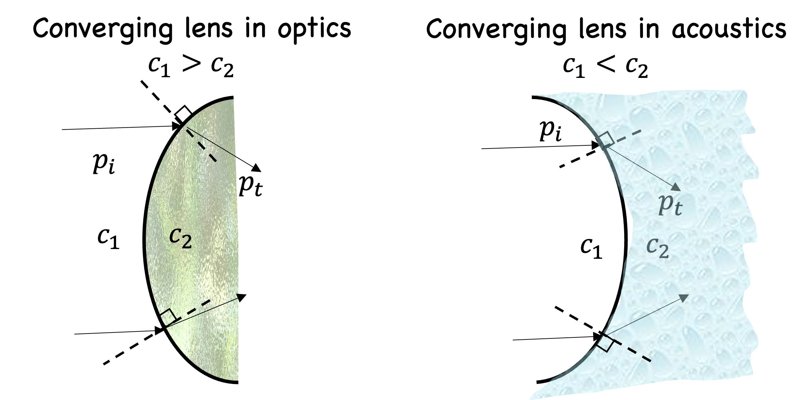
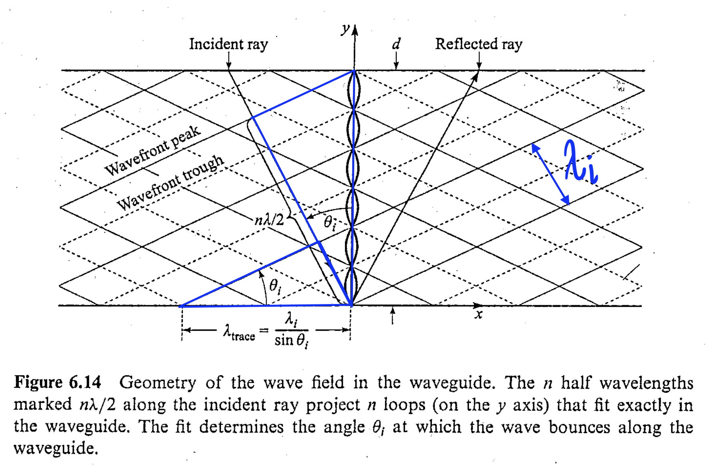

This page follows the chapter-by-chapter organization of Fundamentals of Physical Acoustics by D. T. Blackstock. Chapters 13 and 14 are combined into a collective section on diffraction, for which M. F. Hamilton's lecture notes are the primary reference. Some content comes from the Feynman Lectures (Volume I, chapters 47-52) and Allan D. Pierce's Acoustics: An Introduction to Its Physical Principles and Applications.
Concepts and problems I find challenging are denoted by the wheel of dharma, ☸. Note to self: when studying, resist the urge to view the answer before working out the problem yourself!
Rather than providing a direct definition, Blackstock provides six qualities that broadly characterize waves.
Points (1), (2), and (6) apply to all types of waves. (3) and (4) only apply to mechanical waves in the continuum approximation and could therefore be excluded for a more general perspective. (5) is debatable.
See also: What is a Wave? by Scales and Snieder.
The general solution to the 1D wave equation is \(\xi(x,t) = f(x-ct)+ g(x+ct)\). Write \begin{align} P(x)&=\xi(x,0)= f(x) + g(x)\label{Pd}\tag{i}\\ Q(x)&=\xi'(x,0)= -cf'(x) + cg'(x)\,.\label{Qd}\tag{ii} \end{align} Integrate equation (\ref{Qd}) and combine with equation (\ref{Pd}) to obtain \begin{align} f(x)&=\frac{1}{2}P(x)- \frac{1}{2c}\int Q(y)dy \tag{iii}\label{df}\\ g(x)&=\frac{1}{2}P(x)+ \frac{1}{2c}\int Q(y)dy\,.\tag{iv}\label{dg} \end{align} Replace \(x\mapsto x-ct\) in equation (\ref{df}) and replace \(x\mapsto x+ct\) in equation (\ref{dg}) and let the lower limit of the integrals be \(x_0\): \begin{align} f(x-ct)&=\frac{1}{2}P(x-ct)- \frac{1}{2c}\int_{x_0}^{x-ct} Q(y)dy \tag{v}\label{df1}\\ g(x+ct)&=\frac{1}{2}P(x+ct)+ \frac{1}{2c}\int_{x_0}^{x+ct} Q(y)dy\,.\tag{vi}\label{dg1} \end{align} Finally, add equations (\ref{df1}) and (\ref{dg1}) to obtain the d'Alambert solution, \begin{equation*} \xi(x,t) = \frac{1}{2}\big\lbrack P(x-ct)+ P(x+ct) \big\rbrack + \frac{1}{2c}\int_{x-ct}^{x+ct} Q(y)dy\,. \end{equation*}
The d'Alambert solution says that the wave speed is independent of the energy of the initial impulse, a hallmark of linear wave phenomena.
Note that both problems are forced wave problems, which are boundary-value problems (i.e., "What is the solution to the wave equation given a particular boundary condition?"). Thus the d'Alambert solution derived in question (2) above is not of use here, since that is the solution to the initial-value problem (i.e., "What is the solution to the wave equation given an initial displacement and velocity). The distinction between boundary- and initial-value problems is a good one to keep in mind, since basically all problems in acoustics can be categorized this way. For example, problems involving waveguides, horns, and diffraction are usually formulated as boundary-value problems. Meanwhile, problems involving modal responses in enclosures are usually formulated as initial-value problems (though rarely explicitly). When finding the eigenfunctions and eigenfrequencies of enclosure, these are the functions and frequencies that would be excited due to an impulse.
1B-4 and 1B-5 are homework problems, so I cannot post the solution, but I will outline what should be done: In 1B-4, the function corresponding to waves traveling to the left should be tossed out. The argument of the initial condition, \(t\), should simply be replaced with \(t- x/c_0\). In 1B-5, both functions should be kept; the solution is identical to that of 1B-4 except for the presence of an additional term, which is has the argument \(t+x/c_0\).
For lossy lines, \(e\) and \(i\) are no longer in phase, and thus the impedance is complex. However, the characteristic impedance is still \(\sqrt{L/C}\).
The kinetic and potential energy densities are equal. This is as far as Dr. Hamilton goes, but I think this is true for plane standing waves as well. See here for the proof, for waves on a string (but it's an identical argument for all linear wave phenomena).
Tsunamis are shallow-water waves in the sense that the wavelength \(\lambda\) is much greater than the depth of the ocean \(h_0\), i.e., \(h_0\ll\lambda\). This means that the particle velocity is purely in the \(x\)-direction, i.e., \(\boldsymbol{u} = u\hat{x}\).
Since \(\mathcal{W}\) is conserved, and since \(\rho_0 g^{3/2}\) is a constant, \(\xi \propto h_0^{-1/4}\). Thus a large amplification \((h_{0,\text{deep}}/h_{0,\text{shallow}})^{1/4}\) of the wave height is acheived when a tsunami wave approaches the shore.
This is a tough derivation. It is worked out here. I also made a video of myself deriving it, because this one is so convoluted: nonlinear wave equation for finite deformations of string.
Note the error of the sign of the second term in the answer provided in Fundamentals. The correct answer is \[\xi_{xx}+ \frac{\mathcal{T}_x}{\mathcal{T}}\xi_x - \frac{1}{c^2}\xi_{tt}=0\,.\]
The mass of fluid inside a tube of cross-sectional area \(S\) and length \(\Delta x\) is \(\rho S\Delta x\), and the time derivative of this mass must equal the mass inflow \(+\) the mass outflow, which is \(\rho u S\rvert_{x} -\rho u S\rvert_{x+\Delta x} \). That is, \begin{align*} \frac{\partial}{\partial t}(S\Delta x \rho) &= \rho u S\rvert_{x} -\rho u S\rvert_{x+\Delta x} \\ \frac{\partial \rho}{\partial t} &= -\frac{\partial \rho u}{\partial x} \\\frac{\partial \rho}{\partial t} + \frac{\partial (\rho u)}{\partial x}&=0\,. \end{align*}
The momentum of fluid inside a tube of cross-sectional area \(S\) and length \(\Delta x\) is \(\rho u S\Delta x\), and the time derivative of this momentum must equal the momentum inflow \(+\) the momentum outflow \(+\) the force on the boundaries, which is \(\rho u^2 S\rvert_{x} -\rho u^2 S\rvert_{x+\Delta x} + PS\rvert_{x} - PS\rvert_{x+\Delta x}\). That is, \begin{align*} \frac{\partial}{\partial t}(S\Delta x u \rho) &= \rho u^2 S\rvert_{x} -\rho u^2 S\rvert_{x+\Delta x} + PS\rvert_{x} - PS\rvert_{x+\Delta x} \\ \frac{\partial (\rho u)}{\partial t} &= -\frac{\partial \rho u^2}{\partial x}-\frac{\partial P}{\partial x} \\ \frac{\partial (\rho u)}{\partial t} + \frac{\partial (\rho u^2)}{\partial x} + \frac{\partial P}{\partial x}&=0\,. \end{align*}
Generally, the pressure is given by two other state variables, like density and entropy, i.e., \(P = P(\rho,s)\). But in acoustics, we can get by by assuming that even mildly lossy wave propagation is isentropic, according to Dr. Hamilton:
The lossy linear progressive wave equation does indeed describe isentropic wave propagation under the assumed conditions. Until the attenuation is so strong that one is in the gray area of wave propagation versus diffusion (i.e., for an absorption length on the order of the wavelength), the attenuation is a minor perturbation and it introduces a negligible change in the phase speed relative to that in an ideal fluid.Therefore, for much of acoustics, the isentropic condition lets us assume pressure is only a function of density, i.e., \(P(\rho)\). Just as for any function of one variable, the Taylor expansion of \(P(\rho)= P(\rho_0+\rho')\) about \(\rho_0\) is \begin{align} P(\rho_0 + \rho') &= p_0 + \frac{dP}{d\rho}\bigg\rvert_{\rho=\rho_0}(\rho-\rho_0) + \frac{1}{2!} \frac{d^2P}{d\rho^2}\bigg\rvert_{\rho=\rho_0}(\rho-\rho_0)^2 + \dots \notag\tag{i}\label{TaylorP} \end{align} where \(P = p_0 + p\), \(P(\rho_0)=p_0\), and \(\rho = \rho_0 + \rho'\). Equation (\ref{TaylorP}) can be written as \begin{align} P(\rho_0 + \rho') &= p_0 + \bigg(\rho_0\frac{dP}{d\rho}\bigg)\bigg\rvert_{\rho=\rho_0}\bigg(\frac{\rho-\rho_0}{\rho_0}\bigg) + \bigg(\rho_0^2\frac{1}{2!} \frac{d^2P}{d\rho^2}\bigg)\bigg\rvert_{\rho=\rho_0}\bigg(\frac{\rho-\rho_0}{\rho_0}\bigg)^2 + \dots \notag\\ &= p_0 + A\frac{\rho-\rho_0}{\rho_0} + \frac{B}{2!}\bigg(\frac{\rho-\rho_0}{\rho_0}\bigg)^2 + \dots \tag{ii}\label{TaylorP2} \end{align} where \begin{align*} A&= \rho_0\frac{dP}{d\rho}\bigg\rvert_{\rho=\rho_0} = \rho_0 c_0^2\\ B&=\rho_0^2 \frac{d^2P}{d\rho^2}\bigg\rvert_{\rho=\rho_0}\,, \end{align*} where the definition of the linear speed of sound \(c_0 \equiv (dP/d\rho)\rvert_{\rho=\rho_0}\) has been used. (On the other hand \(c = dP/d\rho\) i.e., not evaluated at at equilibrium density, is the nonlinear speed of sound). Equation (\ref{TaylorP2}) can be rearranged by writing \(P = p_0 + p\) and \(\rho-\rho_0 = \rho'\), and by factoring out \(A\), resulting in Blackstock's equation (C-44): \begin{equation*} p = c_0^2\rho'\bigg( 1 + \frac{B}{2!A}\frac{\rho'}{\rho_0} + \dots\bigg) \end{equation*} Thus the ratio \(B/A\) is seen to be the coefficient of the first nonlinear term of the isentropic equation of state.
Recall the adiabatic gas law, \(P = p_0(\rho/\rho_0)^\gamma\). By the definition of linear sound speed, \begin{align*} c_0^2 &=\frac{dP}{d\rho}\bigg\rvert_{\rho=\rho_0}\\ &=\gamma \frac{p_0}{\rho_0} \bigg(\frac{\rho}{\rho_0}\bigg)^{\gamma-1}\bigg\rvert_{\rho=\rho_0}\\ &= \frac{\gamma p_0}{\rho_0}\\ \implies c_0 &= \sqrt{\frac{\gamma p_0}{\rho_0}} = \sqrt{\gamma R T_0}\,, \end{align*} where the second equality in the last line follows from the ideal gas law. This was shown by Laplace.
Next recall the isothermal gas law, \(p/p_0 = \rho/\rho_0\) and repeat the procedure above, giving \[c_0 = \sqrt{p_0/\rho_0}\,.\] One could equivalently set \(\gamma = 1\) in the adiabatic sound speed to recover the isothermal sound speed. Newton had calculated the isothermal sound speed more than a century prior to Laplace's calculation of the adiabatic sound speed.
Bonus: Use the alternate form of the ideal gas law, in terms of number of molecules and the Boltzmann constant:
\begin{align*}
c_0^2&= \frac{\gamma P_0}{\rho_0}\\
&= \frac{\gamma P_0 V_0}{\rho_0 V_0}\\
&= \frac{\gamma NkT_0}{Nm}
\end{align*}
Noting that \(kT = \frac{1}{3}m\langle v^2\rangle\), the above becomes
\begin{align*}
c_0^2 &= \frac{\gamma N m \langle v^2\rangle}{3Nm}\\
&= \frac{\gamma}{3}\langle v^2\rangle
\end{align*}
Take the square root and note that \(v_\text{rms} = \sqrt{\langle v^2\rangle}\). Thus
\begin{align*}
c_0 &= (\gamma/3)^{1/2} v_\text{rms}
\end{align*}
Where does \(kT = \frac{1}{3}m\langle v^2\rangle\) come from? It comes from the equipartition theorem, which says that each quadratic degree of freedom contributes \(kT/2\) to the energy. There are three degrees of freedom for a monatomic gas. Thus \(3kT/2 = \frac{1}{2}m\langle v^2\rangle \), which gives the result. From R. P. Feynman's lecture on the topic,
The speed of sound is of the same order of magnitude as the speed of the molecules, and is actually somewhat less than this average speed. Of course we could expect such a result, because a disturbance like a change in pressure is, after all, propagated by the motion of the molecules.
The continuity and momentum equations are linearized, and the linearized state relation \(\rho' = p/c_0^2\) is invoked to eliminate density, resulting in \begin{align} \frac{1}{c_0^2}\frac{\partial p}{\partial t} + \rho_0 \frac{\partial u}{\partial x} = 0\tag{i}\label{linc}\\ \frac{\partial p}{\partial x} + \rho_0 \frac{\partial u}{\partial t} = 0\,.\tag{ii}\label{linm} \end{align} The time derivative of equation (\ref{linc}) and the spatial derivative of equation (\ref{linm}) are taken, and the resulting equations are subtracted, giving the wave equation, \[\frac{\partial^2 p}{\partial x^2} - \frac{1}{c_0^2}\frac{\partial^2 p}{\partial t^2}=0\,.\]
Let \(p = f(x-c_0t)\). Then by the momentum equation \(\rho_0 \partial u/\partial t= -\partial p/\partial x\), \begin{align*} u &= -\frac{1}{\rho_0}\int f'(x-c_0t)dt\\ &= -\frac{1}{\rho_0}\bigg(-\frac{1}{c_0}\bigg) f\\ &= \frac{1}{\rho_0 c_0}p\\ \implies \frac{p}{u}&= \rho_0 c_0 \end{align*} If the direction of the sound is reversed, \(p = f(x+c_0t)\), which results in \(p/u= -\rho_0 c_0\).
Consider the imaginary part of a solution of the spherically symmetric wave equation, \begin{equation}\label{impart} p = \frac{\Im e^{j(\omega t-kr)}}{r}\,.\tag{i} \end{equation} Equation (\ref{impart}) is inserted into the radial component of the momentum equation, where \(\partial u/\partial t =j\omega u\) \begin{align} j\omega \rho_0 u &= -\frac{\partial p}{\partial r}\notag\\ u&= \frac{1}{j\omega \rho_0}\bigg(jk + \frac{1}{r}\bigg) p\notag\\ \implies \frac{p}{u} &= \frac{j\omega \rho_0}{jk + 1/r}\notag\\ \frac{p}{u} &= \frac{j\omega \rho_0/jk}{1 + 1/jkr}\notag\\ Z= \frac{p}{u} &= \frac{\rho_0 c_0}{1 + 1/jkr}\tag{ii}\label{impers}\,. \end{align} The rectangular and polar forms of equation (\ref{impers}) are \begin{align*} Z &= \frac{\rho_0 c_0}{1+1/k^2 r^2} + j\frac{\rho_0c_0/kr}{1+1/k^2 r^2}\\ &= \rho_0 c_0 \frac{kr}{\sqrt{1+k^2r^2}} e^{j\text{arccot} kr}\,. \end{align*} For incoming spherical waves \(p = \frac{\Im e^{j(\omega t+kr)}}{r}\), equation (\ref{impers}) obtains two additional negative signs: \begin{align*} j\omega \rho_0 u &= -\frac{\partial p}{\partial r}\notag\\ u&= \frac{1}{j\omega \rho_0}\bigg(-jk + \frac{1}{r}\bigg) p\notag\\ \implies \frac{p}{u} &= \frac{j\omega \rho_0}{-jk + 1/r}\notag\\ \frac{p}{u} &= \frac{-j\omega \rho_0/jk}{1 - 1/jkr}\notag\\ \frac{p}{u} &= -\frac{\rho_0 c_0}{1 - 1/jkr}\,. \end{align*}
From the above problem, the rectangular form of equation (\ref{impers}) is \begin{align*} Z = \frac{\rho_0 c_0}{1+1/k^2 r^2} + j\frac{\rho_0c_0/kr}{1+1/k^2 r^2}\,, \end{align*} from which it can be seen that for \begin{align*} Z = \begin{cases} \rho_0 c_0 &\text{for}\quad kr\gg 1\\ j\omega\rho_0 r &\text{for}\quad kr\ll 1 \end{cases} \end{align*} The \(kr \gg 1\) limit represents efficient radiation, as the impedance is purely real and recovers the plane wave impedance relation. Meanwhile the \(kr \ll 1\) limit is purely reactive, representing poor radiation.
We know the solution must have the form \begin{equation}\label{formofsol}\tag{i} p(r,t) = \frac{A}{r}\exp{j(\omega t - kr)}\,. \end{equation} To determine the constant \(A\), recall the spherical wave impedance relation, \begin{align*} Z(r=a) = \frac{p(r=a)}{u(r=a)}=\frac{\rho_0 c_0}{1+1/jka}\,, \end{align*} and match the boundary condition \(u_0 e^{j\omega t}\) at the radius \(a\) to the pressure at \(r=a\): \begin{align}\label{ata}\tag{ii} p(r=a,t) = u_0 e^{j\omega t}\frac{\rho_0 c_0}{1+1/jka} \end{align} Setting equations (\ref{formofsol}) and (\ref{ata}) equal gives \begin{align} \frac{A}{a}\exp{j(\omega t - ka)} &= u_0 e^{j\omega t}\frac{\rho_0 c_0}{1+1/jka}\notag\\ \implies A&= \frac{\rho_0 c_0 u_0 a}{1+1/jka}\exp{jka}\label{Aeq}\tag{iii} \end{align} The pressure field is therefore given by combining equations (\ref{formofsol}) and (\ref{Aeq}): \begin{align*} p(r,t) = \frac{\rho_0 c_0 u_0}{1+1/jka}\frac{a}{r}\exp{j[\omega t- k(r-a)]}\,. \end{align*}
Denoting \(W =\) power = \(dw/dt\), where \(w\) is work, the intensity \(I\) is \begin{align*} I&= \langle \mathrm{W}/{S} \rangle\\ &=\bigg\langle \frac{dw}{dt}\frac{1}{S}\bigg\rangle\\ &=\bigg\langle \frac{F\,dx}{S}\frac{1}{dt}\bigg\rangle\\ &=\bigg\langle \frac{F}{S}\frac{dx}{dt}\bigg\rangle\\ & = \langle p u \rangle \end{align*}
The intensity is given by \begin{align*} I &= \langle pu \rangle\\ &= \frac{1}{\rho_0 c_0}\langle p^2 \rangle\\ &=\frac{1}{\rho_0 c_0}\int_{0}^{t_\text{av}}p^2 dt\\ &=\frac{p_\text{rms}^2}{\rho_0 c_0} \end{align*}
The intensity is given by \begin{align*} I &= \langle pu \rangle\\ &= \frac{1}{2}\Re(pu^*)\\ &=\frac{1}{2\rho_0c_0}\Re(pp^*(1+1/jkr))\\ &=\frac{1}{\rho_0c_0}\frac{|p|^2}{2}\\ &=\frac{p_\text{rms}^2}{\rho_0 c_0} \end{align*}
By taking the integral \(p_\text{rms}^2 = \frac{1}{t_\text{av}}\int_0^{t_\text{av}} p^2 dt\), one finds that \(p_\text{rms} = A/\sqrt 2\) for a sinusoidal wave and \(p_\text{rms} = A/\sqrt 3\) for N-waves.
The definitions are \begin{align*} \text{SPL}&=20 \log_{10} (p_\text{rms}/p_\text{ref})\\ \text{IL}&=10 \log_{10} (I/I_\text{ref})\\ \text{PWL}&=10 \log_{10} (W/W_\text{ref}) \end{align*} SPL and IL are functions of distance from a sound source (because, e.g., sound pressure is proportional to \(1/r\) and intensity is proportional to \(1/r^2\) in a spherical wave) whereas PWL is the total power radiated by a sound source, wherever it goes and however it diverges. The \(\text{IL}\) in a purely standing wave field is \(-\infty\), because \(I = 0\).
It is a good thing to be able to show that \(I = 0\) in a standing wave field. Consider the standing wave \(p(x) = A\cos(kx)\). Then by the momentum equation, \[u = \frac{jka}{\rho_0}\int \cos kx dt = \frac{jkA}{\rho_0}(t-\phi)\cos{kx},\] where \(\phi\) is a phase. Then the intensity is given by \begin{align*} I &= \frac{1}{2} \Re (pu^*)\\ &= \frac{1}{2}\Re{\bigg(j\frac{kA^2}{\rho}(t-\phi)\cos^2{kx} \bigg)}\\ &=0\,. \end{align*}
This is another hard one. See here, or here for a video (The video includes the derivation of the acoustic energy corollary). I doubt we are responsible for these kinds of clever manipulations, but it's good to know the main result, that the kinetic and potentitial energy densities are equal in a progressive plane wave.
The definitions are \begin{align*} Z_\text{sp ac} &= \frac{p}{u}\\ Z_\text{ac} &= \frac{p}{q} = \frac{p}{Su} = Z_\text{sp ac}/S\\ Z_\text{mech} &= \frac{F}{u} = \frac{Sp}{u} = Z_\text{sp ac}S\,. \end{align*}
The intensity level can be expressed as \begin{align*} \text{IL} &= 10 \log_{10} \frac{I}{I_\text{ref}}\\ &= 10 \log_{10} \frac{p^2_{\text{rms}}/\rho_0c_0}{I_\text{ref}}\\ &= 10 \log_{10} \frac{p^2_{\text{rms}}}{p^2_{\text{ref}}}\frac{p^2_{\text{ref}}}{\rho_0c_0I_\text{ref}}\\ &= 10 \log_{10} \frac{p^2_{\text{rms}}}{p^2_{\text{ref}}} + 10\log_{10}\frac{p^2_{\text{ref}}}{\rho_0c_0I_\text{ref}}\\ &= 20 \log_{10} \frac{p_{\text{rms}}}{p_{\text{ref}}} + 10\log_{10}\frac{p^2_{\text{ref}}}{\rho_0c_0I_\text{ref}}\\ &\simeq \text{SPL}\, \end{align*}
It turns out that in air at STP the term \(10\log_{10}\frac{p^2_{\text{ref}}}{\rho_0c_0I_\text{ref}}\) is small, like \(-0.16 \)"Particle velocity" does not refer to a single molecule. Rather, it refers to a "fluid particle" within the continuum approximation, "a large enough collection of molecules that the average of their random motions is zero," as Blackstock writes (see page 27-28).
The conservation of mass in integral form is \[\frac{\partial}{\partial t} \int_\mathcal{V} \rho\, dV + \oint_\mathcal{S} \rho \vec{u} \cdot dS \,= 0\,,\] while the conservation of momentum in integral form is \[\frac{\partial}{\partial t} \int_\mathcal{V} \rho \vec{u}\, dV = \oint_\mathcal{V} \vec{B} \rho \,dV - \int_\mathcal{S} P dS - \oint_\mathcal{S} (\rho \vec{u})\vec{u} \cdot dS \,.\]
Zeroth law: the transitive property. If A is in thermal equilibrium with B, and B is in thermal equilibrium with C, then A is in thermal equilibrium with C.
First law: the conservation of energy. The change in internal energy is the heat plus the work done on the system: \(\Delta U = Q +W\).
Second law: entropy. The entropy of the universe tends towards a maximum, i.e., \(dS \geq \delta Q/T\), where the equality is fulfilled by quasistatic processes.
Third law: absolute zero. The entropy approaches a constant in the limit that the temperature goes to absolute zero.
Note that quadratic degrees of freedom include translational, rotational, and vibrational types of energies, which are quadratic in velocity, angular velocity, and displacement respectively. Helium is monotomic and therefore has only three translational degrees of freedom: \(f=3\). Oxygen and nitrogen are both diatomic and thus have three translational degrees of freedom and two rotational degrees of freedom: \(f=5\).
The seven diatomic gases can be remembered with the expression, "BrINClHOF!", which indicates that bromine, iodine, nitrogen, chlorine, hyrogen, oxygen, and fluorine are diatomic gases.
The equipartition theorem states that the average energy of any quadratic degree of freedom is \(\frac{1}{2} kT\), where \(k\) is the Boltzmann constant. For example, a system of \(N\) molecules, each with \(f\) degrees of freedom, has a total thermal energy of \(U = N f kT/2\).
Note that for three dimensional motion for a monotomic gas, \(U = 3kT/2\) by the equipartition theorem. As all the energy is kinetic, \(U = m\langle v^2\rangle/2\), where \(\langle v^2\rangle\) is the average of the square of the velocities. Therefore, \(\sqrt{\langle v^2\rangle} = 3kT/m = v_\text{rms}\).
Start with the first law of thermodynamics, and note that the no heat is flows into or out of the gas in an adiabatic process: \[\Delta U = Q+W = W.\] By the equipartition theorem, \begin{align*} U &= \frac{f}{2}NkT\\ \implies dU &= \frac{f}{2}Nk\, dT\,. \end{align*} Setting the above relation equal to the infinitesimal work done by the gas during a compression (because \(dU =dW\)) results in \begin{align*} \frac{f}{2}Nk\, dT &= -P dV \,. \end{align*} Substitution of the ideal gas law \(P = NkT/V\) on the right-hand side and rearrangement gives \begin{align*} \frac{f}{2}\frac{dT}{T} &= -\frac{dV}{V} \,. \end{align*} Integration gives \begin{align*} \frac{f}{2} \ln T/T_0 &= -\ln V/V_0\\ \ln [(T/T_0)^{f/2}] &= -\ln V/V_0 \end{align*} Exponentiation and rearrangement gives \begin{align*} V T^{f/2} &= V_0 T_0^{f/2} \,. \end{align*} Invoking the ideal gas law to eliminate temperature gives \begin{align*} P^{f/2} V^{\frac{f+2}{2}} &= P^{f/2}_0 V^{\frac{f+2}{2}}_0 \,. \end{align*} Raising both sides to the power of \(2/f\) gives \begin{align*} P V^{\frac{f+2}{f}} &= P_0 V^{\frac{f+2}{2}}_0\,. \end{align*} Identifying \(\gamma \equiv (f+2)/f\), and noting that \(V \propto 1/\rho\), gives the desired result: \begin{align*} P \rho_0^{\gamma} &= P^{f/2}_0 \rho^{\gamma}\\ P/P_0 &= (\rho/\rho_0)^{\gamma} \end{align*}
For an adiabatic compression, \(P = P_0 (V_0/V)^\gamma\), as derived above. The work done on the gas is \begin{align*} W &= -\int_{V_0}^{V_1} P dV\\ &= -\int_{V_0}^{V_1} P_0 (V_0/V)^\gamma dV \\ &= -P_0 V_0^\gamma \int_{V_0}^{V_1} V^{-\gamma} dV\\ &= -\frac{P_0 V_0^\gamma}{1-\gamma}V^{1-\gamma}\bigg\rvert_{V_0}^{V_1} \\ &= -\frac{P_0 V_0^\gamma}{1-\gamma}(V_0^{1-\gamma}-V_1^{1-\gamma})\\ &= \frac{P_0 V_0}{\gamma-1}[(V_1/V_0)^{1-\gamma} - 1]\\ &= \frac{P_0 V_0}{\gamma-1}[(V_0/V_1)^{\gamma-1} - 1] \end{align*}
Every adiabatic process is not isentropic, but every isentropic process is adiabatic. This is because an isentropic process is defined to be a reversible adiabatic process.
Also note that every reversible process is quasistatic, but not every quasistatic process is reversible "if there is also heat flowing in or out or if entropy is being created in some other way" (Schroeder).
The thermodynamic quantities in equation (\ref{entropers}) are first expressed as ambient \(+\) perturbation quantities, i.e., \begin{align*} T &= T_0 + T'\\ s &= s_0 + s,. \end{align*} Thus equation (\ref{entropers}) becomes \[\rho_0 T_0 \frac{\partial s'}{\partial t} \sim \kappa \nabla^2 T'\,, \] or, assuming time-harmonic solutions (i.e.,\(\partial/\partial t \mapsto j\omega \) and \(\nabla^2 \mapsto k^2 = \omega^2/c^2\)), \[j\omega\rho_0 T_0 s' \sim \kappa \frac{\omega^2}{c_0^2} T'\,. \] Rearranging this result gives \[\rho_0 c_0^2 \frac{T_0}{\kappa} \frac{s'}{T'} \sim \omega \,,\] from which it can be seen that \begin{align*} s'&\to 0 \quad \text{ as } \quad \omega \to 0,\quad \text{(Isentropic)}\\ T'&\to 0 \quad\text{ as }\quad \omega \to \infty,\quad \text{(Isothermal)}\,. \end{align*} Feynman provides some insightful commentary:
Newton was the first to calculate the rate of change of pressure with density, and he supposed that the temperature remained unchanged. He argued that the heat was conducted from one region to the other so rapidly that the temperature could not rise or fall. This argument gives the isothermal speed of sound, and it is wrong. The correct deduction was given later by Laplace, who put forward the opposite idea—that the pressure and temperature change adiabatically in a sound wave. The heat flow from the compressed region to the rarefied region is negligible so long as the wavelength is long compared with the mean free path. Under this condition the slight amount of heat flow in a sound wave does not affect the speed, although it gives a small absorption of the sound energy. We can expect correctly that this absorption increases as the wavelength approaches the mean free path, but these wavelengths are smaller by factors of about a million than the wavelengths of audible sound.
This is the material derivative, defined by \[\frac{\partial}{\partial t} + \vec{u}\cdot \vec{\nabla}\,.\]
All four of the equations above are exact, i.e., \(\rho\), \(P\), and \(T\) are the exact density, pressure, and temperature. Equation (\ref{blacksters1}) is the continuity equation. Abandoning the material derivative, it is written \[\frac{\partial \rho}{\partial t} + \vec{\nabla}\cdot (\rho \vec{u}) = 0\,.\] Equation (\ref{blacksters2}) is the momentum equation. \(\lambda \) is the dilatational viscosity coefficient, and \(\mu\) is the shear viscosity coefficient. (Sometimes the two are combined as \(\nabla + 2\mu = \tilde{V}\), where \(\tilde{V}\) is the viscosity number). Abandoning the material derivative, this equation becomes \[\rho \frac{\partial\vec{u}}{\partial t} + \rho (\vec{u}\cdot \vec{\nabla}) \vec{u} + \vec{\nabla} P = (\lambda + 2\mu) \vec{\nabla}(\vec{\nabla}\cdot \vec{u}) - \mu \vec{\nabla} \times \vec{\nabla} \times \vec{u} \] Equation (\ref{blacksters3}) is the energy equation. \(C_v\) is the heat capacity at constant volume. \(\Phi^{\text{(visc)}}\) is the nonlinear viscous dissipation function, and \(\kappa\) is the thermal conduction coefficient. Equation (\ref{blacksters4}) is the ideal gas law. \(R\) is the gas constant, given by \(C_p-C_v\). Since \(\gamma = C_p/C_v\), the gas constant can also be written as \[R = (\gamma-1)C_v.\]
On one side of the boundary (impedance \(Z_1\)) there is a pressure of \(p_i + p_r\). On the other side of the boundary (impedance \(Z_2\)) there is a pressure \(p_t\). Begin by noting that there cannot be any force at the boundary. That is, \(p_i + p_r = p_t\), or dividing by \(p_i\), \begin{align}\label{lskfjls}\tag{i} 1 + R = T\,. \end{align} Also note that the particle velocity must be continuous at the boundary: \(u_i + u_r = u_t\). Using the plane wave impedance relation \(u= p/Z\), the above relation becomes \begin{align*} \frac{p_i}{Z_1} - \frac{p_r}{Z_1} &= \frac{p_t}{Z_2}\\ p_i - p_r &= \frac{Z_1}{Z_2} p_t \end{align*} Dividing the above equation by \(p_i\) gives \begin{align} 1 - R &= \frac{Z_1}{Z_2} T \label{lksjfdlj}\tag{ii} \end{align} Combining equations (\ref{lskfjls}) and (\ref{lksjfdlj}) yields \begin{align}\label{lksdfsff}\tag{iii} T = \frac{2}{1+Z_1/Z_2}\,. \end{align} Combining equation (\ref{lksdfsff}) with equation (\ref{lskfjls}) gives \begin{align}\label{lkref}\tag{iv} R = \frac{1- Z_1/Z_2}{1+Z_1/Z_2}\,. \end{align} Equations (\ref{lksdfsff}) and (\ref{lkref}) make sense because they match the following limits:
When \(Z_1/Z_2 \to 0\), the incident wave experiences a rigid boundary, and an in-phase reflection and pressure doubling at boundary is expected. Indeed, equation (\ref{lkref}) goes to \(1\) while equation (\ref{lksdfsff}) goes to \(2\).
When \(Z_1/Z_2 \to \infty\) the incident wave experiences a pressure-release boundary, and an out-of-phase reflection and zero transmission at boundary is expected. Indeed, equation (\ref{lkref}) goes to \(-1\) while equation (\ref{lksdfsff}) goes to \(0\).
Finally, when \(Z_1/Z_2 = 1\), the incident wave does not experience a boundary, and no reflection and perfect transmission is expected. Indeed, equation (\ref{lkref}) goes to \(0\) and equation (\ref{lksdfsff}) goes to \(1\).
Recall that the power is given by \(W = \oint \vec{I} \cdot d\vec{S}\), which for a plane wave simply reads \(p_\text{rms}^2 S/Z\). What is curious about this result is that the power in a plane wave is infinite, because the pressure extends over the infinite surface, and the integral of a constant over all space diverges. However, never mind this curiosity; it is resolved because the ratio of powers is taken, and thus the surface area cancels. The power reflection coefficient is \begin{align*} r = \frac{W_r}{W_i} = \frac{p_{r, \text{rms}}^2 S/Z_1}{p_{i, \text{rms}}^2 S/Z_1} \end{align*} Critically, note that the ratio of the rms pressures equals the ratio of the pressures, because the reflected wave has the same waveform as the incident wave in linear acoustics. The reflection coefficient is therefore simply \begin{align*} r = \frac{p_r^2}{p_i^2} = R^2\,. \end{align*} Meanwhile, the transmission coefficient is \begin{align*} \tau &= \frac{W_t}{W_i}\\ &= \frac{p_{t, \text{rms}}^2 S/Z_2}{p_{i, \text{rms}}^2 S/Z_1}\\ &= \frac{p_t^2/Z_2}{p_i^2/Z_1}\\ &= T^2 \frac{Z_1}{Z_2}\,. \end{align*} Evidently, since \begin{align*} R^2 &= \frac{1+(Z_1/Z_2)^2 - 2Z_1/Z_2}{1+(Z_1/Z_2)^2 + 2Z_1/Z_2}\\ T^2 &= \frac{4}{1 +(Z_1/Z_2)^2 + 2Z_1/Z_2} \end{align*} the conservation of power is recovered, i.e., \begin{align*} r + \tau &= R^2 + T^2 \frac{Z_1}{Z_2}\\ &= \frac{1+(Z_1/Z_2)^2 - 2Z_1/Z_2}{1+(Z_1/Z_2)^2 + 2Z_1/Z_2} + \frac{4 Z_1/Z_2}{1 +(Z_1/Z_2)^2 + 2Z_1/Z_2} \\ &= \frac{1+(Z_1/Z_2)^2 + 2Z_1/Z_2}{1+(Z_1/Z_2)^2 + 2Z_1/Z_2}\\ &= 1\,, \end{align*} and the result obeys the first law of thermodynamics.
If there is a change in surface area in a medium, then \(1+R = T\) as before (force-free surface), but now the volume velocity \(q\) must be conserved at the junction, \begin{align*} q_i + q_r &= q_t\\ S_1 u_i + S_1 u_r &= S_2 u_t, \end{align*} where the definition of volume velocity has been used to obtain the second line above. Invoking the plane wave impedance relation gives \begin{align*} \frac{S_1}{Z} p_i - \frac{S_1}{Z} p_r &= \frac{S_2}{Z} p_t\\ p_i - p_r &= \frac{S_2}{S_1}p_t\\ 1- R&= \frac{S_2}{S_1}T \end{align*} Combining the above with \(1+R = T\) gives \begin{align*} T &= \frac{2S_1}{S_1+S_2} \,.\\ &= \frac{2}{1+S_2/S_1} \end{align*} and \begin{align*} R &= \frac{1 -S_2/S_1}{1+S_2/S_1}\,. \end{align*} Again a physical interpretation is provided:
For the case that the boundary is replaced by a rigid wall, \(S_2/S_1 \to 0\). Appropriately, \(R \to 1\) and \(T\to 2\).
For the case that the boundary is replaced by a pressure release surface, \(S_2/S_1 \to \infty\). Appropriately, \(R \to -1\) and \(T\to 0\).
Finally, for the degenerate case of no boundary, \(S_2/S_1 \to 1\). Appropriately, \(R \to 0\) and \(T\to 1\).
An implicit assumption is that the wavelength is much longer than the characteristic length scale of the change in area. This is because the acoustic wave must maintain its plane-wave nature at the junctio for the the simple derivation above to hold. For example, if the change in surface area is due to sharp corners at the junction of two pipes of two different cross sectional areas, then the scattering off these corners must be neglected; the scattering is minimal for the case when the corners are of a dimension much smaller than a wavelength.
If there is a change in both surface area and impedance, then \(1+R = T\) and \begin{align*} q_i + q_r &= q_t\\ S_1 u_i + S_1 u_r &= S_2 u_t, \end{align*} where the definition of volume velocity has been used to obtain the second line above. Invoking the plane wave impedance relation gives \begin{align*} \frac{S_1}{Z_1} p_i - \frac{S_1}{Z_1} p_r &= \frac{S_2}{Z_2} p_t\\ p_i - p_r &= \frac{S_2 Z_1}{S_1 Z_2}p_t\\ 1- R&= \frac{S_2 Z_1}{S_1 Z_2}T \end{align*} Combining the above with \(1+R = T\) gives \begin{align*} T &= \frac{2S_1 Z_2}{S_1 Z_2 +S_2 Z_1} \,.\\ &= \frac{2}{1+Z_1S_2/Z_2S_1} \end{align*} and \begin{align*} R &= \frac{1 -Z_1S_2/Z_2S_1}{1+Z_1S_2/Z_2S_1}\,. \end{align*} The above results can easily be recast using the notion of acoustic impedance, which is defined as \(Z_\text{ac} = Z_\text{sp, ac}/S\): \begin{align*} T &= \frac{2}{1+Z_\text{ac,1}/Z_\text{ac,2}}\\ R &= \frac{1 -Z_\text{ac,1}/Z_\text{ac,2}}{1+Z_\text{ac,1}/Z_\text{ac,2}}\,. \end{align*}
The setup is much the same as in problem (3), only this time accounting for the change in surface area as well as the change in impedance at the boundary: \begin{align*} r = \frac{p_r^2}{p_i^2} = R^2\,. \end{align*} Meanwhile, the transmission coefficient is \begin{align*} \tau &= \frac{W_t}{W_i}\\ &= \frac{p_{t, \text{rms}}^2 S_2/Z_2}{p_{i, \text{rms}}^2 S_1/Z_1}\\ &= \frac{p_t^2/Z_\text{ac,2}}{p_i^2/Z_\text{ac,1}}\\ &= T^2 \frac{Z_\text{ac,1}}{Z_\text{ac,2}}\,. \end{align*} You can check for yourself that power is conserved, but the algebra is identical to that of problem (3).
The general pressure solution is \begin{align*} p(x,t) = f(x-c_0t) + g(x+c_0t)\,. \end{align*} Using the plane wave impedance relation, the corresponding particle velocity is \begin{align*} u(x,t) = \frac{1}{\rho_0c_0}[f(x-c_0t) - g(x+c_0t)]\,. \end{align*} Matching the initial velocity condition gives \begin{align*} u(x,0) = \frac{1}{\rho_0c_0}[f(x) - g(x)] =0 \end{align*} which means that \(f(x) = g(x)\). Thus the pressure and particle velocity solution reads \begin{align*} p(x,t) &= f(x-c_0t) + f(x+c_0t)\\ u(x,t) &= \frac{1}{\rho_0c_0}[f(x-c_0t) - f(x+c_0t)]\,. \end{align*} Next, matching the initial pressure condition \(p(x,0) = A[H(x) - H(x-L)]\) gives \begin{align*} p(x,0) = f(x) = \frac{A}{2}[H(x) - H(x-L)]\,. \end{align*} The pressure and particle velocity solution then reads \begin{align*} p(x,t) &= \frac{A}{2}[H(x-c_0t) - H(x-L-c_0t) + H(x+c_0t) - H(x-L+c_0t)]\\ u(x,t) &= \frac{A}{2\rho_0c_0}[H(x-c_0t) - H(x-L-c_0t) - H(x+c_0t) + H(x-L+c_0t)]\,, \end{align*} or, in terms of the "rect'' function (see footnote on page 10 of Blackstock for the definition), \begin{align*} p(x,t)&= \frac{A}{2}\bigg[\text{rect }\bigg(\frac{x-c_0t}{2L}\bigg) + \text{rect }\bigg(\frac{x+c_0t}{2L}\bigg)\bigg]\\ u(x,t)&=\frac{A}{2\rho_0c_0}\bigg[\text{rect }\bigg(\frac{x-c_0t}{2L}\bigg) - \text{rect }\bigg(\frac{x+c_0t}{2L}\bigg)\bigg]\,. \end{align*} The solution for negative \(x\) is disregarded. Note that the above particle velocity solution satisfies the boundary condition \(u(0,t) =0\). I don't know Dr. Blackstock makes a fuss about satisfying the boundary condition on page 120 (''But this is not a sufficient definition of \(f\) to satisfy the last condition...'').
The volume velocity vanishes at the center of a spherical wave. A spherically converging wave is spherically symmetric, and therefore the particle velocities (which only have a radial component) coming from all directions towards the focus cancel each other out at the focus.
Since the sound obeys the spherically symmetric wave equation, the velocity potential is of the form \begin{align*} \phi &= \frac{f(r -c_0 t)}{r} + \frac{g(r +c_0 t)}{r}\,. \end{align*} The pressure is therefore \begin{align}\label{form of p}\tag{iv} p(r,t) &= -\rho_0 \phi_t = \rho_0 c_0\frac{f'(r -c_0 t) -g'(r +c_0 t)}{r}\,, \end{align} and the particle velocity is \begin{align}\label{form of u}\tag{v} u(r,t) &= \phi_r = -\frac{f(r -c_0 t) + g(r + c_0 t)}{r^2} + \frac{f'(r -c_0 t) + g'(r + c_0 t)}{r} \,. \end{align} Applying the initial condition given by equation (\ref{initialcondos2}) on equation (\ref{form of u}) gives \begin{align*} \frac{f(r) + g(r)}{r^2} = \frac{f'(r ) + g'(r)}{r} \end{align*} This equality is guaranteed if \(g(r) = -f(r)\), because this implies that \(g'(r) = -f'(r)\) (though the converse is not necessarily true). Therefore, equation (\ref{form of p}) becomes \begin{align}\label{form of p'}\tag{vi} p(r,t) &= \rho_0 c_0\frac{f'(r -c_0 t) + f'(r +c_0 t)}{r}\,, \end{align} and equation (\ref{form of u}) becomes \begin{align*} u(r,t) &= -\frac{f(r -c_0 t) - f(r + c_0 t)}{r^2} + \frac{f'(r -c_0 t) - f'(r + c_0 t)}{r} \,. \end{align*} The volume velocity is therefore \begin{align} q &= Su = 4\pi r^2 u \notag\\ &= -4\pi [f(r -c_0 t) - f(r + c_0 t)] + 4\pi r [f'(r -c_0 t) - f'(r + c_0 t)] \,.\label{q}\tag{vii} \end{align} The condition given by equation (\ref{zero vv}) is applied to equation (\ref{q}): \begin{align} \lim_{r\to 0}q &= -4\pi [f( -c_0 t) - f(c_0 t)] = 0\notag\\ \implies f(-c_0 t) &= f(c_0 t) \,.\label{limq}\tag{viii} \end{align} Taking the derivative of equation (\ref{limq}) gives \begin{align}\label{oddy}\tag{ix} -f'(-c_0 t) &= f'(c_0 t)\,, \end{align} i.e., that \(f'\) is odd.
Meanwhile, the initial condition given by equation (\ref{initialcondos1}) is applied to equation (\ref{form of p'}): \begin{align*} A[H(r) - H(r-r_0)] &= 2\rho_0 c_0\frac{f'(r)}{r} \end{align*} Solving the above for \(f'(r)\) gives \begin{align}\label{fprime}\tag{x} f'(r) &= \frac{rA[H(r) - H(r-r_0)]}{2\rho_0 c_0} \end{align} Enforcing equation (\ref{oddy}) (the oddness of \(f'\)) on equation (\ref{fprime}) requires that \(f'\) is defined for \(-r\) as well as \(+r\). This can be achieved using the rectangle function, where \(\text{rect }\big( \frac{x-x_0}{w}\big) = H(x-x_0 + w/2) - H(x-x_0 - w/2)\): \begin{align*} f'(r) = \frac{rA}{2\rho_0 c_0}\text{ rect } \bigg(\frac{r}{2r_0}\bigg) \end{align*} Therefore, \begin{align}\label{final f'}\tag{xi} f'(r\pm c_0t) = \frac{A}{2\rho_0 c_0}(r\pm c_0t)\text{ rect } \bigg(\frac{r\pm c_0 t}{2r_0}\bigg) \end{align} Substituting equation (\ref{final f'}) into equation (\ref{form of p'}) gives the solution: \begin{align*} p(r,t) = \frac{A}{2r} \bigg[(r-c_0t)\text{ rect }\Big(\frac{r-c_0t}{2r_0}\Big) + (r+c_0t)\text{ rect }\Big(\frac{r+c_0t}{2r_0}\Big)\bigg] \end{align*}
First, apply the momentum equation for a spherical wave, \(\rho_0\dot u = -p_r\), to equation (\ref{form of pressuriners}): \begin{align*} \rho_0 \frac{\partial u}{\partial t} &= \frac{F'(t-r/c_0) - r_0p_\mathrm{in}'(t + r/c_0)}{c_0 r} + \frac{F(t-r/c_0)+ r_0 p_\mathrm{in} (t + r/c_0)}{r^2} \end{align*} Solving the above for \(u\) by integration over time gives \begin{align} u &= -\frac{1}{\rho_0}\int \frac{\partial p}{\partial t}\, dt\notag\\ &= \frac{F(t-r/c_0) - r_0p_\mathrm{in}(t + r/c_0)}{\rho_0c_0 r} + \frac{\tilde{F}(t-r/c_0)+ r_0 \tilde{p}_\mathrm{in} (t + r/c_0)}{\rho_0 r^2}\,,\label{refthis}\tag{ii} \end{align} where \(\tilde{p}\) is the antiderivative of \(p\), and \(\tilde{F}\) is the antiderivative of \(F\). When the boundary condition \(\lim_{r\to 0} q = \lim_{r\to 0} 4\pi r^2 u = 0\) is applied to equation (\ref{refthis}), the first term of equation (\ref{refthis}) vanishes, and the second term gives \begin{align*} \frac{4\pi}{\rho_0}[\tilde{F}(t) + r_0 \tilde{p}_\mathrm{in}(t)] &= 0\,. \end{align*} Solving the above for \(\tilde{F}(t)\) gives \begin{align*} \tilde{F}(t) = -r_0\tilde{p}_\mathrm{in}(t) \quad \implies \quad F(t) = -r_0 p_\mathrm{in}(t)\,. \end{align*} Substituting \(F(t) = -r_0 p_\mathrm{in}(t)\) into equation (\ref{form of pressuriners}) gives the solution \begin{equation}\label{pressuresolutioneerses} p = \frac{r_0}{r}p_\mathrm{in}(t + r/c_0) - \frac{r_0}{r}p_\mathrm{in}(t-r/c_0),\tag{iii} \end{equation} The first term corresponds to the incoming wave, and the second term corresponds to the outgoing wave. Note that the outgoing wave is out of phase with respect to the incoming wave.
What happens at \(r=0\) (the focus)? The limit of equation (\ref{pressuresolutioneerses}) is taken: \begin{align*} \lim_{r\to 0}p &= \lim_{r\to 0}\frac{r_0}{r}\bigg[p_\mathrm{in}(t + r/c_0) - p_\mathrm{in}(t-r/c_0)\bigg]\\ &=\lim_{r\to 0}\frac{r_0}{r}\bigg[p_\mathrm{in}(t) +\frac{r}{c_0}p'_\mathrm{in}(t)- p_\mathrm{in}(t)+ \frac{r}{c_0} p_\mathrm{in}'(t)\bigg]\\ &=\frac{2r_0}{c_0}p'_\mathrm{in}(t) \end{align*} In the second equality above, the function is Taylor expanded to first order, and the higher-order terms are dropped. The conclusion is that the pressure at the center of the sphere is proportional to the time derivative of the incident pressure. \begin{align*} p(r=0,t) = \frac{2r_0}{c_0}p'_\mathrm{in}(t) \end{align*}
The phase undergoes a \(180^\circ\) inversion.
This short video summarizes questions 1-3.
Start with the general solution \(P(x)\) and \(U(x)\) of the 1D Helmholtz equation for plane traveling waves. The general solution for pressure is \[P = Ae^{-jkx} + Be^{jkx},\] and division by \(Z_0\), the impedance of the medium, gives the particle velocity: \[U = \frac{A}{Z_0} e^{-jkx} - \frac{B}{Z_0}e^{jkx}\,.\] Define \(x=l-d\), where \(x=0\) corresponds to the location of the source, and \(d=0\) corresponds to the location of the load, i.e., \(d\) is a coordinate pointing in the opposite direction as \(x\) and offset by a distance \(l\). The pressure and particle velocity become \begin{align*} P &= Ae^{-jkl} e^{jkd} + Be^{jkl} e^{-jkd}\\ U &= \frac{A}{Z_0} e^{-jkl}e^{jkd} - \frac{B}{Z_0}e^{jkl}e^{-jkd} \end{align*} Call \(P_i \equiv A e^{-jkl}\) and \(P_r \equiv B e^{jkl}\). Then the above becomes \begin{align*} P &= P_i e^{jkd} + P_r e^{-jkd}\\ &= P_i e^{jkd} (1 + R\, e^{-2jkd})\,.\\ U&= \frac{P_i}{Z_0} e^{jkd} - \frac{P_r}{Z_0} e^{-jkd}\\ &= \frac{P_i}{Z_0}e^{jkd} (1 - Re^{-2jkd}) \end{align*} Note from the above that \(P(d=0) \,=\, P_i (1 + R)\), and that \(U(d=0) \,=\, \frac{P_i}{Z_0} (1 - R)\). Calculate \(P(d=0)/U(d=0)\) to find \(Z_n\), the impedance of the load, in terms of the reflection coefficient \(R\): \begin{align*} Z_n = Z_0 \frac{1+R}{1-R} \end{align*} If \(R\) (both magnitude and phase) can be found, then the complex impedance \(Z_n\) of the unknown load can be found.
\(|R|\) is found by measuring the "standing wave ratio," or \(\text{SWR}\). The standing wave ratio is the ratio \(|P_\text{max}|/|P_\text{min}|\), where \(P_\text{max} = P_i(1+R)\) is the maximum pressure magnitude and where \(P_\text{min} = P_i(1-R)\) the minimum pressure magnitude. Therefore, \[\text{SWR} = \frac{1+|R|}{1-|R|}.\] This relation is inverted for \(|R|\): \[|R| = \frac{\text{SWR} - 1}{\text{SWR}+ 1}\,.\]
Take the magnitude of \(P=P_ie^{jkd}(1-R e^{-2jkd})\) by writing \(R = \rho e^{j\psi}\): \begin{align*} |P| &= P_i\sqrt{(1+ \rho e^{j(\psi - 2kd)})(1+ \rho e^{-j(\psi - 2kd)})} \\ &= P_i\sqrt{1 + \rho^2 + \rho [e^{-j({\psi - 2kd})} + e^{j(\psi - 2kd)}]}\\ &= P_i\sqrt{1 + \rho^2 + 2\rho \cos (\psi - 2kd) }\,. \end{align*} Apparently, \(|P|\) attains a maximum for \(\cos (\psi - 2kd) = 1\), or \[(kd)_\text{max} = \frac{\psi}{2},\] and a minimum for \(\cos (\psi - 2kd) = 0\), or \[(kd)_\text{min} = \frac{\psi}{2} \pm \frac{\pi}{2}\,. \] Thus the phase of reflection coefficient is found by finding the distance \(d\) to either the maximum or the minimum in the pressure field.
By definition, \(\alpha\) is the ratio of absorbed to incident power. Note that by energy conservation, the incident power is the sum of reflected power and the absorbed power. Thus, \[\alpha = \frac{W_\text{absorbed}}{W_\text{incident}} = \frac{W_\text{incident}-W_\text{reflected}}{W_\text{incident}} = 1- \frac{W_\text{reflected}}{W_\text{incident}} = 1 - |R|^2\,.\]
For a pressure source, the impedance goes to \(0\) for resonance. A small amount of effort causes a huge flow, and impedance is effort/flow.
For a velocity source, the impedance goes to \(\infty\) for resonance. A small amount of flow at the source results in a huge pressure field.
Recall that the acoustic impedance is \(Z_\text{ac} = p/q\), where \(q = Su\) is the volume velocity. Therefore, for mass-like behaviour, \[Z_\text{ac} = \frac{p}{Su} = \frac{f/S}{Su} = \frac{M \dot{u}}{S^2 u} = \frac{j\omega M}{S^2} = j\omega M_\text{ac}\,.\] Meanwhile, for spring-like behaviour, \[Z_\text{ac} = \frac{p}{Su} = \frac{f/S}{S\dot{x}} = \frac{K x}{S^2 j\omega x} = \frac{K }{S^2 j\omega } = \frac{K_\text{ac} }{j\omega } =1/j\omega C_\text{ac}\,,\] where \(M_\text{ac}\) is the acoustic mass, \(K_\text{ac}\) is the acoustic stiffness, and \(C_\text{ac}\) is the acoustic compliance.
Using the momentum equation, the particle velocity is found: \[U(x) = -\frac{1}{j\omega \rho_0} \frac{dP}{dx} = \frac{A}{j\rho_0 c_0} \sin kx - \frac{B}{j\rho_0 c_0} \cos kx\,.\] Why must the momentum equation must be used here, while the impedance relation could be used in problem (1)? It's because these are standing waves (left-going and right-going components are already baked in), while those were traveling waves (which superpose to give standing waves). The impedance relation \(p/u = Z\) applies to what type of wave: standing or traveling?
The coefficients \(A\) and \(B\) are found by applying the boundary conditions. At \(x=L\), \begin{align*} Z_n = \frac{P(L)}{U(L)} &= j\rho_0 c_0 \frac{A\cos kL + B\sin kL}{A\sin kL - B\cos kL}\\ &= j\rho_0 c_0 \frac{A/B + \tan kL}{A/B \tan kL - 1}\\ \implies \frac{A}{B} &= j \frac{Z_n/\rho_0 c_0 + j\tan kL}{1 + j(Z_n/\rho_0 c_0) \tan kL}\,. \end{align*} Meanwhile, at \(x=0\), \begin{align*} Z_\text{in} = \frac{P(0)}{U(0)} &= -j\rho_0 c_0 \frac{A}{B}\\ \implies \frac{A}{B} &= j \frac{Z_\text{in}}{\rho_0c_0} \end{align*} Setting the above two equations for \(\frac{A}{B}\) equal and solving for \(\frac{Z_\text{in}}{\rho_0 c_0}\) gives the input impedance in dimensionless form: \[\frac{Z_\text{in}}{\rho_0 c_0} = \frac{Z_n/\rho_0 c_0 + j\tan kL}{1 + j(Z_n/\rho_0 c_0) \tan kL} \,. \]
Note that \(\tan kL \simeq kL \) for small \(kL\) and equation (\ref{Input impedance}) becomes \(Z_\text{in} = -j\rho_0c_0\cot{kL}\) for \(Z_n \to \infty\). Then, \(Z_\text{in} = \frac{\rho_0c_0}{jkL}\), or \[Z_\text{in} = \frac{\rho_0 c_0^2}{j\omega L}\,.\] However, the quantity that should be memorized for acoustic circuit analysis is the acoustic impedance, \[Z_\text{ac} = Z_\text{sp ac}/S = \rho_0 c_0^2/{j\omega L S^2} = \rho_0 c_0^2/{j\omega V}\,.\] See question (5) for the impedances that should be memorized.
For a flanged tube, the end correction is \(\Delta L = 8a/3\pi\). That is to say, the effective length of a flanged tube is \(L + \Delta L\), and the effective length of an orifice is \(2\Delta L\). This end correction originate from the fact that the impedance due to a circular piston contains resistive (real) and reactive (imaginary) parts, of which the reactance dominates. Therefore, when sound arrives at the open end of a tube, "it sees, not zero load, but rather a load consisting mainly of a short continuation of the tube, \(\Delta L = 8a/3\pi\)" (Blackstock, pg. 151-152).
The unflanged tube has an end correction of \(\Delta L = 0.6133a\). This is a 20th-century result (Schwinger).
Equation (\ref{Input impedance}) in these limits reads \[Z_\text{in} = j\rho_0 c_0 kL',\] where \(L' = L + \Delta L\) (the end correction). The version that should be memorized, though, is the acoustic impedance, which is \[Z_\text{ac} = j\rho_0 c_0 kL/S\,.\]
The Helmholtz resonator consists of capacitave (from the chamber), inductive (from the mass in the neck), and resistive (from the opening) elements. The three corresponding impedances should be added in series since the components appear in series in the resonator (bad reasoning, I know): \begin{align*} Z_\text{ac} &= Z_\text{ac}^{\text{cap}} + Z_\text{ac}^{\text{ind}} + Z_\text{ac}^{\text{res}}\\ &= \frac{\rho_0c_0^2}{j\omega V} + \frac{j\omega \rho_0 L'}{S} + \frac{\rho_0 c_0 k^2}{2\pi}\,. \end{align*} For a pressure source, the resonance frequency is found by setting the impedance (neglecting resistance) to \(0\): \begin{align*} \frac{\rho_0c_0^2}{j\omega V} + \frac{j\omega \rho_0 L'}{S} &= 0\\ \omega_0 &= c_0 \sqrt{S/L'V}\,. \end{align*}
How would you find the resonance frequency for a velocity source, for which \(Z_\text{in} = \infty\)?
One common definition is \[Q = \frac{\omega}{\Delta \omega}\] where \(\Delta \omega\) is the bandwidth.
Another definition is \[Q = \frac{P_\text{max}}{P_\text{min}}\,,\] which is subtly different from the definition of \(\text{SWR}\). (But how? I actually don't know. Is it that Q is a complex quantity here, while the SWR is real?)
Yet another definition (Dr. Wilson's favourite), is \[Q = \text{ # of oscillations required to return to steady state }\]
The spherical wave impedance is \begin{align*} Z &= \frac{\rho_0 c_0 }{1 + 1/jka}\\ &\to jka\rho_0c_0, \quad ka \ll 1\,. \end{align*} This is a specific acoustic impedance. To obtain an acoustic impedance, divide by \(S = 4\pi a^2\): \begin{align}\label{bubbblers}\tag{i} Z_\text{ac}^\text{ind} = \frac{j\omega a\rho_0}{4 \pi a^2} = \frac{j\omega \rho_0}{4\pi a} \end{align} Noting that this in the form of a mass-like impedance, a compliance-like impedance is sought to set up a resonance phenomenon: \begin{align} Z_\text{ac}^\text{cap} &= \frac{\rho_0 c_0^2}{j\omega V} = \frac{3\rho_0 c_0^2}{4j\omega \pi a^3}\,.\label{bubbbblers}\tag{ii} \end{align} The resonance frequency is found by combining equations (\ref{bubbblers}) and (\ref{bubbbblers}) and setting the total impedance equal to \(0\). At this juncture, also note that \(\rho_0c_0^2 = \gamma p_0\), since an expression involving this quantity is requested in the problem: \begin{align*} Z_\text{ac}^\text{tot} = \frac{3\gamma p_0}{4j\omega \pi a^3} + \frac{j\omega \rho_0}{4\pi a} = 0 \end{align*} Solving for \(\omega\) gives \begin{align*} \omega &= \frac{1}{a} \sqrt{\frac{3\gamma p_0}{\rho_0}}\\ f&= \frac{1}{2\pi a} \sqrt{\frac{3\gamma p_0}{\rho_0}}\,. \end{align*} This is a decent approximation because \(ka = 0.014\) for an air-water bubble.
The orifice has a resistive part due to the opening on both ends, as well as an inductive part: \begin{align*} Z_{\text{ac}} = \frac{2\rho_0c_0k^2}{2\pi} + \frac{j\omega\rho_0 L'}{S}\,, \end{align*} where the effective length of the orifice is \(L' = 2\Delta L\) (because the orifice has no length of its own), where \(\Delta L = 8a/3\pi\).
Chris has an nice way of doing this using circuit analysis. Here is how to find the reflection and transmission coefficients using the force-free boundary condition and continuity of volume velocity:
At the junction, there are two conditions, as in the case with a single change of cross-sectional surface area. The first condition is that there is no force at the junction, and the second condition is that volume velocity at the junction is continuous: \begin{align*} p_i + p_r = p_{t2} = p_{t3}\\ q_i + q_r = q_{t2} + q_{t3} \end{align*} Divide the first equation by \(p_i\) and call \(p_{t2}/p_i = p_{t3}/p_i \equiv T\): \begin{align*} 1 + R = T\,. \end{align*} Meanwhile, the second equation is written as \[S_1 u_i + S_1u_r = S_2 u_{t2} + S_3 u_{t3}\] Noting that \(Z = p/u\), gives \begin{align*} S_1 \frac{p_i}{Z_1} - S_1\frac{p_r}{Z_1} = S_2 \frac{p_{t2}}{Z_2} + S_3 \frac{p_{t3}}{Z_3}\,. \end{align*} Dividing by \(p_i\) results in \begin{align*} \frac{S_1}{Z_1}(1 - R) = T \frac{S_2}{Z_2} + T \frac{S_3}{Z_3}\,. \end{align*} The above quantities are written in terms of their acoustic impedances. \begin{align*} 1 - R &= Z_\text{ac,1} T ( Z_\text{ac,2}^{-1} + Z_\text{ac,3}^{-1}) \end{align*} The above equation is added to \(1+R = T\): \begin{align*} 2 & = Z_\text{ac,1} T ( Z_\text{ac,2}^{-1} + Z_\text{ac,3}^{-1}) + T\\ 2&= T [1 + Z_\text{ac,1} ( Z_\text{ac,2}^{-1} + Z_\text{ac,3}^{-1})] \end{align*} Solving for \(T\) gives \begin{align*} T &= \frac{2Z_\text{ac,1}^{-1}}{Z_\text{ac,1}^{-1} + Z_\text{ac,2}^{-1} + Z_\text{ac,3}^{-1}} \end{align*} Thus the reflection coefficient is \begin{align*} R &= T -1 = \frac{2Z_\text{ac,1}^{-1}}{Z_\text{ac,1}^{-1} + Z_\text{ac,2}^{-1} + Z_\text{ac,3}^{-1}} - 1\\ &=\frac{Z_\text{ac,1}^{-1} - Z_\text{ac,2}^{-1} - Z_\text{ac,3}^{-1}}{Z_\text{ac,1}^{-1} + Z_\text{ac,2}^{-1} + Z_\text{ac,3}^{-1}}\,. \end{align*}
Let a Helmholtz resonator be attached a side branch to a pipe, and let the medium be uniform. Thus \(Z_\text{ac,1} = Z_\text{ac,3}\) the reflection coefficient is \begin{align*} R &=-\frac{Z_\text{ac,2}^{-1}}{2Z_\text{ac,1}^{-1} + Z_\text{ac,2}^{-1}}\\ &= -\frac{Z_\text{ac,2}^{-1} Z_\text{ac,2}} {2Z_\text{ac,1}^{-1}Z_\text{ac,2} + Z_\text{ac,2}^{-1} Z_\text{ac,2}}\\ &= -\frac{1}{2Z_\text{ac,1}^{-1}Z_\text{ac,2} + 1} \end{align*} The impedance of the Helmholtz resonator goes to \(0\) at resonance. Thus the reflection coefficient becomes \(R = -1\). Therefore, at the resonance frequency of the Helmholtz resonator, all of the sound is sent back down the pipe from which it originated.
For \(k_2 \ell = n\pi\), equations (\ref{3R}) and (\ref{3T}) become \begin{align*} R &= \frac{(1-Z_1/Z_3)}{(1+Z_1/Z_3)}\\ T &= (-1)^n\frac{2}{(1+Z_1/Z_3)}\,. \end{align*} For \(k_2 \ell = (2n-1)\pi/2\): \begin{align*} R &= \frac{Z_2/Z_3-Z_1/Z_2}{Z_2/Z_3+Z_1/Z_2}\\ T &= j(-1)^n\frac{2}{Z_2/Z_3+Z_1/Z_2}\,. \end{align*}
The reflection and transmission coefficients become \begin{align*} R &= \frac{(1-S_3/S_1)\cos k\ell + j(S_3/S_2-S_2/S_1)\sin k\ell}{(1+S_3/S_1)\cos k\ell + j(S_3/S_2+S_2/S_1)\sin k\ell}\\ T &= \frac{2}{(1+S_3/S_1)\cos k\ell + j(S_3/S_2+S_2/S_1)\sin k\ell} \end{align*}
This short video summarizes questions 1-9.
At \(x=0\), there is no force on the boundary; thus \(p_i(x=0) + p_r(x=0) = p_t(x=0)\\\), or \begin{align*} A_i \exp{(- jk_1y\sin\theta_i)}+ A_r \exp{(- jk_1y\sin\theta_r)}&=A_t \exp{(- jk_2y\sin\theta_t)} \end{align*} For the above equation to hold, the phases must match, i.e., \(A_i + A_r = A_t\) or \(1 + R = T\): \[ k_1\sin\theta_i = k_1\sin\theta_r = k_2\sin\theta_t\] The first equality reveals the law of reflection, \[\theta_i = \theta_r\,,\] and the second equality reveals Snell's law, \[\frac{\sin\theta_i}{c_1} = \frac{\sin\theta_t}{c_2}\,.\]
The other condition is that the normal part of the particle velocity, namely the \(x\)-component of \(u\), is continuous across the boundary. Using equations (\ref{pi})-(\ref{pt}) in conjunction with the momentum equation \(-\frac{1}{j\omega \rho_0}\frac{\partial p}{\partial x}\) and the results of the previous question yields \begin{align*} \frac{1}{\omega \rho_1}\frac{\partial }{\partial x}(A_i e^{-jk_1x\cos\theta_i}) + \frac{1}{\omega \rho_1}\frac{\partial }{\partial x}(A_r e^{jk_1x\cos\theta_r}) = \frac{1}{\omega \rho_2}\frac{\partial }{\partial x}(A_t e^{-jk_2x\cos\theta_t}) \end{align*} Taking the derivatives above and matching the phases gives \begin{align*} \frac{-k_1}{\rho_1\omega}A_i\cos\theta_i + \frac{k_1}{\rho_1\omega}A_r\cos\theta_r &= -\frac{k_2}{\rho_2 \omega}A_t \cos\theta_t\\ \frac{-1}{\rho_1c_1}A_i\cos\theta_i + \frac{1}{\rho_1c_1}A_r\cos\theta_r &= -\frac{1}{\rho_2 c_2}A_t \cos\theta_t\\ \end{align*} Noting the law of reflection (\(\theta_i = \theta_r\)), multiplying through by \(-1\), and dividing by \(A_i\) results in \begin{align} 1-R = \frac{Z_1}{Z_2}\frac{\cos\theta_t}{\cos\theta_i}T\tag{i}\label{secondone} \end{align} Combining equation (\ref{secondone}) with \(1+R= T\) results in \begin{align*} R &= \frac{Z_2\cos\theta_i - Z_1\cos\theta_t}{Z_2\cos\theta_i + Z_1\cos\theta_t}\\ T &= \frac{2Z_2\cos\theta_i}{Z_2\cos\theta_i + Z_1\cos\theta_t} \end{align*}
The power reflection coefficient is \begin{align*} r = \frac{W_r}{W_i} = \frac{S_rI_r}{S_iI_i}= \frac{I_r}{I_i} = \frac{|A_i|^2}{|A_r|^2} = |R|^2 \end{align*} where \(S_i\) is the cross-sectional area of the incident ray, and \(S_r\) is the cross-sectional area of the reflected ray. The areas of the same by the law of reflection.
Meanwhile, the cheap way to get \(\tau\) is to invoke the conservation of energy: \(\tau = 1-r\). The rigorous way accounts for the fact that the cross sectional area of the transmitted beam \(S_t\) is not the same as \(S_i\) due to Snell's law. In this approach, it is noted that \(S_t/S_i = \cos\theta_t/\cos\theta_i\) (see Blackstock's figure 5.5 on page 192), giving \begin{align*} \tau = \frac{W_t}{W_i} = \frac{S_tI_t}{S_iI_i}= \frac{S_t|A_t|^2/Z_2}{S_i|A_i|^2/Z_1} = \frac{Z_1\cos\theta_t}{Z_2\cos\theta_i}|T|^2\,. \end{align*}
It is called the angle of intromission. See here for the derivation, which was not rigorously derived in class, nor in Blackstock's text. In fact it is very simple. Set \(T=1\), which corresponds to perfect transmission. Solve for \(\cos\theta_t\) and square the result. Meanwhile, solve Snell's law for \(\sin\theta_t\) and square it. Add these two equations and solve for \(\sin^2\theta_i\).
The condition for total internal reflection is that the transmitted angle is \(\theta_t = 90^\circ\), and the angle \(\theta_i\) at which this occurs is called the critical angle, \(\theta_\text{crit}\). \(\theta_\text{crit}\) is given by Snell's law: \[\theta_\text{crit} = \arcsin \frac{c_1}{c_2}\]
Sound (and light) traveling from a medium of higher wave speed into lower wave speed bend toward the normal. Thus \(c_1 > c_2\). There can exist a critical angle for wave propagation from \(c_2\) to \(c_1\).
This is because in optics, light travels faster in air than in the material of the lens (e.g., a glass lens in air), while in acoustics, sound travels slower in air than the material of the lens (e.g., a water lens in air). For example, a converging lens bends light towards the local normal in the lens, so a convex shape is used in optics, while a concave shape is used in acoustics:
For \(\theta_i >\theta_\text{crit}\), \(\cos\theta_t\) is negative, because for \(\pi/2 < \psi <3\pi/2\), \(-1<\cos \psi <0\). Therefore, equation (\ref{pt}) becomes \begin{align*} p_t &= A_t \exp(\mp jk_2x \sqrt{1-\sin^2\theta_t}-jk_2y\sin\theta_t)\\ &= A_t \exp\bigg(\mp jk_2x \sqrt{1-(c_1/c_2)^2\sin^2\theta_i}-jk_2y\sin\theta_t\bigg)\\ &= A_t \exp\bigg(\pm k_2x \sqrt{(c_1/c_2)^2\sin^2(\theta_i) - 1}-jk_2y\sin\theta_t\bigg)\\ &= A_t \exp\bigg(- k_2x \sqrt{(c_1/c_2)^2\sin^2(\theta_i) - 1}-jk_2y\sin\theta_t\bigg)\,. \end{align*} Thus \(p_t\) decays exponentially in the \(x\) direction. Note that in the last line above, the \(-\) sign in the exponential is chosen because it is physical, i.e., exponential growth is not physical. These are called evanescent waves. The attenuation coefficient as identified as \[\alpha = k_2 \sqrt{(c_2/c_1)^2\sin^2\theta_i - 1}.\] For convenience, Dr. Blackstock also denotes the dimensionless quantity \(\sqrt{(c_2/c_1)^2\sin^2\theta_i - 1}\equiv b\).
As seen in the previous part, the quantity \(\cos\theta_t\) can be written as \(-j\sqrt{(c_2/c_1)^2\sin^2\theta_i - 1} = -jb\). Therefore, the reflection coefficient becomes \begin{align*} R &= \frac{Z_2\cos\theta_i + jb Z_1}{Z_2\cos\theta_i - jb Z_1}\\ &= \frac{\sqrt{Z_2^2\cos^2\theta_i + b^2Z_1^2}e^{j\arctan{bZ_1/Z_2\cos\theta_i}}}{\sqrt{Z_2^2\cos^2\theta_i + b^2Z_1^2}e^{-j\arctan{bZ_1/Z_2\cos\theta_i}}}\\ &= \exp\bigg[{2j\arctan\bigg({\frac{b}{\cos\theta_i}\frac{Z_1}{Z_2}}\bigg)}\bigg]\\ &= \exp(2j\psi) \end{align*} where \(\psi = \arctan\big({\frac{b}{\cos\theta_i}\frac{Z_1}{Z_2}}\big)\). The transmission coefficient \(T\) is therefore \[T = 1+\exp(2j\psi)\,,\] and \[|T| = \sqrt{2+2\cos2\psi}\,. \]
The first way was by considering the wall to be mass-like (i.e., only compliance, no stiffness). In that case, the pressure at the boundary is given by Newton's second law, i.e., \(p_i + p_r -p_t = m\partial u_x/\partial t\), where \(u_x\) is the normal component of the velocity. The other boundary condition is that the normal component of the velocities must match on either side of the boundary, i.e., \(u_i\cos\theta + u_r\cos\theta = u_t\cos\theta\) which gives \(1-R=T\) upon division by \(u_i\cos(\theta)\times\) the impedance of the propagation medium. These relations can be combined to get \(T\), \[T = \frac{1}{1+j\omega m \cos(\theta)/2\rho_0 c_0}\,,\] which recovers the special case of the three-medium problem considered in chapter 4. What is remarkable about \(T\) is that it equals \(1\) for \(\theta= 90^\circ\).
The second way is more refined, in which the wall's stiffness is incorporated. See here for the derivation. In short, the compliance of the wall makes the right-hand side of Newton's second law differ from the rigid case, but the normal component of the particle velocity condition is identical to that in the rigid case. The result is \[T = \frac{1}{1+(j\omega m \cos(\theta)/2\rho_0 c_0)[1-(f/f_0)^2\sin^4\theta]}\,.\] For a given angle, the coincidence frequency is the frequency at which \(T = 1\). Physically, coincidence is the matching of the trace speed to the natural flexural wave speed of the panel. Coincidence takes a massive hit to the transmission loss of a panel.
For composite walls, the power transmission coefficients are averaged by the area they occupy: \[\bar{\tau} = \frac{\sum_n S_n\tau_n}{\sum_n S_n}.\] Note that \(S\) can be in any unit of area. The composite transmission loss is \[\text{TL}_\text{comp} = -10 \log_{10}\bar{\tau}\,.\]
Separation of variables and application of the fixed-fixed boundary condition leads to \begin{align}\tag{i}\label{xiexpanders} \xi(x,t) = \sum_{n=1}^{\infty} \sin(n\pi x/L)(a_n \cos\omega t + b_n\sin \omega t) \end{align} To find the expansion coefficients for the initial condition \(\xi(x,0)\), first note that \(b_n = 0\) in equation (\ref{xiexpanders}): \begin{align*} \xi(x,0) &= \sum_{n=1}^{\infty} a_n\sin(n\pi x/L) \end{align*} Invoking the orthogonality of sines gives \begin{align*} \int_0^L \xi(x,0)\sin(m\pi x/L) dx &= \sum_{n=1}^{\infty} a_n \int_0^L \sin(n\pi x/L)\sin(m\pi x/L)dx \\ \int_0^L \xi(x,0)\sin(m\pi x/L) dx &= \frac{L}{2}\sum_{n=1}^{\infty} a_n \delta_{nm}\\ \implies a_n &= \frac{2}{L}\int_0^L \xi(x,0) \sin(n\pi x/L) dx \end{align*} Thus the solution is \(\xi(x,t) = \sum_{n=1}^{\infty} a_n\sin(n\pi x/L)\), where \(a_n\) is given above.
To find the expansion coefficients for the initial condition \(\dot{\xi}(x,0)\), first note that the time derivative of equation (\ref{xiexpanders}) must be taken, \[\dot{\xi}(x,t) = \sum_{n=1}^{\infty} \sin(n\pi x/L)(-a_n \omega\sin\omega t + \omega b_n\cos \omega t)\,,\] from which evaluation at \(t=0\) shows that \(a_n = 0\): \[\dot{\xi}(x,0) = \omega \sum_{n=1}^{\infty} b_n\sin(n\pi x/L)\,.\] Invoking the orthogonality of sines gives \begin{align*} \int_0^L \dot{\xi}(x,0)\sin(m\pi x/L) dx &= \omega \sum_{n=1}^{\infty} b_n \int_0^L \sin(n\pi x/L)\sin(m\pi x/L)dx \\ \int_0^L \dot{\xi}(x,0)\sin(m\pi x/L) dx &= \frac{L\omega}{2}\sum_{n=1}^{\infty} b_n \delta_{nm}\\ \implies b_n &= \frac{2}{L\omega}\int_0^L \dot{\xi}(x,0) \sin(n\pi x/L) dx \end{align*} Thus the solution is \(\xi(x,t) = \sum_{n=1}^{\infty} b_n\sin(n\pi x/L)\), where \(b_n\) is given above.
First of all, the \(n = 1, 3, 5\dots\) modes will not contribute because they violate the symmetry of the initial condition: these modes are even about \(L/2\), while the initial condition is odd about \(L/2\). Of the remaining \(n = 2, 4, 6\dots\) modes, only \(n=2,6,10\dots\) contribute. While the \(n=4,8,12\dots\) modes are odd about \(L/2\), their derivative is positive at \(x=L/2\), while the derivative of the initial condition is \(-\infty\) at \(x=L/2 \). This can be seen in the plots of the normalized standing waves vs. \(x/L\) below, where the red curve is the \(n = 4\) mode.
The equation for \(b_n\) is \[b_n = \frac{2}{L\omega_n} \int_{0}^{L} \dot{\xi}(x,0)\sin \frac{n\pi x}{L}dx\] so for the initial velocity condition one obtains \begin{align*} b_n &= -\frac{2}{L\omega_n} \int_{0}^{L/2} \sin \frac{n\pi x}{L}dx + \frac{2}{L\omega_n} \int_{L/2}^{L} \sin \frac{n\pi x}{L}dx\\ &=\frac{2Lu_0}{(n\pi)^2 c}\big(2\cos\frac{n\pi}{2} -\cos n\pi - 1\big)\\ &=\begin{cases} 0\quad & n =\text{ odd}\\ 0\quad & n =4,8,12\dots\\ -4\quad& n = 2,6,10,14\dots \end{cases} \end{align*}
The boundary condition at a free end of a string is \(\partial \xi/\partial x = 0\). The reason is that the restoring force on the string is \(f= -\mathcal{T}\sin\theta \simeq -\mathcal{T}\theta\). At the free end of the string, \(x=\ell\), there is no element at \(\ell + \Delta x\) to pull the string up or down. Thus \(\theta = 0 \simeq\tan{\theta}\simeq\partial \xi/\partial x\). This condition is reminiscent of the pressure release surface in acoustics because the derivative of the wave variable vanishes at that location.
The general solution to the Helmholtz equation is \begin{align*} p = \sum_n (a_n\cos kx + b_n \sin kx)\,, \end{align*} the gradient of which is \begin{align*} \frac{dp}{dx} = \sum_n k(-a_n\sin kx + b_n \cos kx)\,. \end{align*} Since \(\frac{dp}{dx}\rvert_{x=0}= 0\), \(b_n = 0\), leaving \begin{align}\tag{i}\label{impyp} p = \sum_n a_n\cos kx \,. \end{align} Substituting equation (\ref{impyp}) into the boundary condition at \(x=L\), \(\rho_0 p +m\frac{dp}{dx} = 0\), gives \begin{align} \rho_0 p\big\rvert_{x=L} +m\frac{dp}{dx}\bigg\rvert_{x=L} &= 0\notag\\ \rho_0 \sum_n a_n\cos kL - m\sum_n k a_n \sin kL &= 0\label{sdlfkj}\tag{ii} \end{align} Each term in the summation of equation (\ref{sdlfkj}) must hold, giving \begin{align*} \rho_0 \cos kL - m k \sin kL &= 0\,, \end{align*} which in turn gives the transcendental equation \(kL\), \[\cot kL = \frac{mk}{\rho_0}\,.\] This tube with a mass at one end would not sound "good," in the sense that its eigenfrequencies are not evenly spaced, i.e., anharmonic, like the gamelan.
\(j\omega \rho_0 p + Z_n\partial p/\partial x = 0\) at \(x=L\) is called an impedance boundary condition. This boundary condition is a linear combination of the field variable and its gradient vanishing at the boundary.
Boundary conditions in which either the field variable or its gradient vanishes generally give rise to harmonic eigenfrequencies. The previous example showed that anharmonic eigenfrequencies arise due to impedance boundary conditions.
Resonance is the infinite response (assuming no loss) of a system due to an external excitation. The frequency of that external excitation is called the resonance frequency. In contrast, eigenfrequencies are the frequencies at which a system vibrates, and they are found by solving the wave equation using orthogonal eigenfunctions. Eigenfrequencies depend on the shape, stiffness, and density of a system. Natural frequencies are synonymous with "eigenfrequencies."
In practice, eigenfrequencies coincide with resonance frequencies, and hence the three terms are often used interchangeably. But technically, resonance frequency refers to a driving frequency that coincides with an eigenfrequency, while the eigenfrequency is more closely related to the system.
See here for the solution, as well as some animations.
Since the phase speed is the speed of a point of constant phase, a differential element of phase \(d\Phi\) is constant: \[d\Phi = \frac{\partial\Phi}{\partial t}dt + \frac{\partial\Phi}{\partial x}dx =0\,.\] Solving for \(dx/dt\) and taking the derivatives of \(\Phi\) with respect to \(x\) and \(t\) gives the phase speed: \begin{align*} c_\text{ph} &= -\frac{\partial \Phi/\partial t}{\partial \Phi/\partial x} = \frac{\omega}{k} \end{align*}
The procedure above is followed: \begin{align*} p(x,t)&= \int_{-\infty}^{\infty} P(k)e^{j(\omega t-kx)}dk\\ &=\int_{-\infty}^{\infty} P(k)e^{j\{[\omega_0 + \frac{\partial \omega}{\partial k}\big\rvert_{k_0}(k-k_0)]t-kx\}}dk\\ &=e^{j(\omega_0t-k_0x)}\int_{-\infty}^{\infty} P(k)e^{j[\frac{\partial \omega}{\partial k}\big\rvert_{k_0}(k-k_0)t-(k-k_0)x]}dk\\ &=e^{j(\omega_0t-k_0x)}\int_{-\infty}^{\infty} P(k)e^{j[(k-k_0)\frac{\partial \omega}{\partial k}\big\rvert_{k_0}t-(k-k_0)x]}dk\\ &=e^{j(\omega_0t-k_0x)}\int_{-\infty}^{\infty} P(k)e^{j(k-k_0)\big(\frac{\partial \omega}{\partial k}\big\rvert_{k_0}t - x\big)}dk\\ \end{align*} The first factor outside the integral is a monochromatic wave with points of constant phase moving at \(\omega_0/k_0\). Meanwhile, the remaining integral is the envelope of the wave packet, traveling at group speed \[c_\text{gr} = \frac{\partial \omega}{\partial k}\bigg\rvert_{k_0}.\] The only assumption made in this derivation is that the wave packet is fairly narrowband, such that the first-order Taylor expansion of \(\omega(k)\) suffices.
Wave energy travels at the group speed. Thus the phase speed can be infinite, while the group speed is bounded by the speed of light.
The slope of the secant line connecting the origin \((0,0)\) to a point \((k, \omega)\) is the phase speed. The slope of the tangent line at \((k, \omega)\) is the group speed.
Qualitatively: The phase speed is the apparent speed with which one wavefront sweeps along the \(x\)-axis, while the group speed is the component of the velocity \(c\) along the \(x\)-axis. For example, the phase speed of the ocean waves traveling at \(90^\circ\) with respect to the \(y\)-axis is the ambient wave speed \(c\) because its wavefronts sweep along the the \(x\)-axis at the speed at which the wave travels, and the group speed is also \(c\) because the wave motion is purely in the \(x\)-direciton. Meanwhile, the phase speed of the ocean waves traveling at \(0^\circ\) with respect to the \(y\)-axis is infinite because its wavefronts sweep along the the \(x\)-axis infinitely fast, while the group speed is also \(0\) because the wave motion has no component in the \(x\)-direction. The waves traveling at \(45^\circ\) have a phase speed larger than \(c\) but less than \(\infty\), and a group speed less than \(c\) but greater than \(0\). In summary, \(c = c^{90^\circ}_\text{ph} < c^{45^\circ}_\text{ph} < c^{0^\circ}_\text{ph} = \infty\), and \(0 = c^{0^\circ}_\text{gr} < c^{45^\circ}_\text{gr} < c^{90^\circ}_\text{gr} = c\).
Quantitatively: The phase speed is the trace velocity, which the trace wavelength times the frequency, \[c_\text{ph} = \frac{c}{\sin\theta}\,,\] while the group speed is the component of the velocity along the \(x\)-axis, \[c_{\text{gr}} = c\sin\theta\,.\]
More questions on phase speed and group speed follow in section 12.
The momentum equation remains the same (though it takes several lines of algebra and the insertion of the continuity equation to show this). The state equation more obviously remains the same. The continuity is the only equation that ends up requiring an extra term. Repeating the derivation for the 1D continuity equation presented in chapter 1 while letting \(S=S(x)\) gives \[\frac{\partial \rho}{\partial t} + \frac{S'}{S}\rho u + \frac{\partial (\rho u)}{\partial x}= 0\,.\] Linearizing and combining the equations of continuity, momentum, and state results in the Webster horn equation, \begin{align*} \frac{\partial^2 p }{\partial x^2} + \frac{dS/dx}{S}\frac{\partial p}{\partial x} = \frac{1}{c_0^2}\frac{\partial^2 p}{\partial t^2}\,. \end{align*}
Inserting \(S=S_0e^{mx}\) into the Webster horn equation gives \begin{align*} \frac{\partial^2 p }{\partial x^2} + m \frac{\partial p}{\partial x} = \frac{1}{c_0^2}\frac{\partial^2 p}{\partial t^2}\,. \end{align*} A solution proportional to \(e^{j(\omega t-kx)}\) is sought, giving \begin{align*} -k^2 - jkm &= -\frac{\omega^2}{c_0^2}\\ k^2 + jkm -k_0^2 &=0\\ \implies k &= -j\frac{m}{2} \pm \frac{\omega}{c_0}\sqrt{1-(m/2k_0)^2} \end{align*} The phase speed is found by taking the real part of the above and solving for \(\omega/k\): \begin{align*} c_\text{ph} = \frac{\omega}{k} = \frac{c_0}{\sqrt{1-(m/2k_0)^2}} \end{align*} Writing \(k_0 = \omega/c_0\) gives \(c_\text{ph} = \frac{c_0}{\sqrt{1-(mc_0/2\omega)^2}} = \frac{c_0}{\sqrt{1-(mc_0/4\pi f)^2}}\). The cutoff frequency is identified to be \(f^{(c)}= mc_0/4\pi\), and the phase speed can therefore be written as \begin{align*} c_\text{ph} = \frac{c_0}{\sqrt{1-(f^{(c)}/f)^2}}\,. \end{align*}
By substituting the expression for \(k\) into the form of solution \(e^{j(\omega t-kx)}\), it is seen that the magnitude of the solution grows as \[|p| \propto e^{-mx/2}.\] This result could be derived by noting that the power, remains constant as the wave propagates through the horn: \begin{align*} W = IS\propto p_\text{rms}^2 S &= \text{constant}\\ \implies p_\text{rms} &\propto 1/\sqrt{S}\\ &\propto 1/\sqrt{e^{mx}}\\ |p|&\propto e^{-mx/2} \end{align*}
Inserting \(k = -j\frac{m}{2} \pm \frac{\omega}{c_0}\sqrt{1-(m/2k_0)^2}\) into this expression for the impedance gives \begin{align*} Z &= \frac{\omega\rho_0}{-j\frac{m}{2} \pm \frac{\omega}{c_0}\sqrt{1-(mc_0/4\pi f)^2}}\\ &=\frac{2\pi f\rho_0}{-j\frac{m}{2} \pm \frac{\omega}{c_0}\sqrt{1-(f^{(c)}/f)^2}}\\ &=\frac{\rho_0}{-j\frac{m}{4\pi f} \pm \frac{1}{c_0}\sqrt{1-(f^{(c)}/f)^2}}\\ &=\frac{\rho_0c_0}{-j\frac{mc_0}{4\pi f} \pm \sqrt{1-(f^{(c)}/f)^2}}\\ &=\frac{\rho_0c_0}{-jf^{(c)}/f \pm \sqrt{1-(f^{(c)}/f)^2}}\\ \end{align*} The rectangular form of the impedance is \begin{align*} Z &= \frac{\rho_0c_0}{-jf^{(c)}/f \pm \sqrt{1-(f^{(c)}/f)^2}}\frac{jf^{(c)}/f \pm \sqrt{1-(f^{(c)}/f)^2}}{jf^{(c)}/f \pm \sqrt{1-(f^{(c)}/f)^2}}\\ &=\rho_0c_0 \bigg[jf^{(c)}/f \pm \sqrt{1-(f^{(c)}/f)^2}\bigg] \end{align*}
The power for the velocity source is \begin{align*} W_\text{in}&= \frac{1}{2}S_0 \Re (pu^*)\\ &=\frac{1}{2}S_0 |u|^2\Re (Z_\text{in})\\ &= \frac{W_0}{\rho_0c_0}\Re (Z_\text{in})\\ &= W_0 \sqrt{1-(f^{(c)}/f)^2} \end{align*} where \(|u|^2=u_0^2\).
Meanwhile, for a pressure source, \(W_0 = \frac{1}{2\rho_0c_0} S_0 p_0^2\). The power for the pressure source is \begin{align*} W_\text{in}&= \frac{1}{2}S_0 \Re (pu^*)\\ &=\frac{1}{2}S_0 |p|^2\Re (1/Z_\text{in})\\ &= W_0\rho_0c_0\Re (1/Z_\text{in})\\ &= W_0 \sqrt{1-(f^{(c)}/f)^2} \end{align*} where \(|p|^2=p_0^2\). It is rather remarkable that the power exerted by an exponential horn driven by a pressure source equals the power exerted by the horn driven by a velocity source. This invariance is unique to exponential horns.
The transmission factor is defined as \begin{align*} \text{TF}&= \frac{W_\text{in}}{W_0} \end{align*} For the exponential horn, the previous result is used, giving \(\text{TF} = \sqrt{1-(f^{(c)}/f)^2}\) for above the cutoff frequency, and \(0\) for below the cutoff frequency. This is the transmission factor for both the pressure source and the velocity source.
The cross-sectional area is \(S(x) = \pi x^2\), and thus \(d S/dx = 2\pi x\). Thus the Webster horn equation \begin{align*} \frac{\partial^2 p}{\partial x^2} + \frac{2}{x}\frac{\partial p}{\partial x} = \frac{1}{c_0^2}\frac{\partial^2 p}{\partial t^2}\,. \end{align*} The solution to this PDE is immediately read off as spherical waves in \(x\).
The input impedance of this horn is given by the spherical wave impedance in rectangular form found in chapter 1, where \(x=x_0\) corresponds to the location of the mouth: \[Z_\text{in}/\rho_0 c_0 = \frac{jk_0x_0 + (k_0x_0)^2}{1 +( k_0x_0)^2}\]
The power for the velocity source is \begin{align*} W_\text{in}&= \frac{W_0}{\rho_0c_0}\Re (Z_\text{in})\\ &= W_0 \frac{(k_0x_0)^2}{1 +( k_0x_0)^2}\\ \implies \text{TF} &= \frac{(k_0x_0)^2}{1 +( k_0x_0)^2} \end{align*} Meanwhile, the power for the pressure source is \begin{align*} W_\text{in}&= W_0\rho_0c_0\Re (1/Z_\text{in})\\ &= W_0 \\ \implies \text{TF} &= 1 \end{align*}
The conical horn does not give rise to dispersion, because \(d\omega/dk =1\) for spherical waves. The conical horn can be used for all frequencies. At low frequencies, it is better to use a conical horn driven by a pressure source, because \(\text{TF} = 1\) for all frequencies.
The catenoidal horn, which must be treated using the WKB method (not covered in class) has the advantage of having vanishing slope at \(x=0\), which allows for it to be joined smoothly to a tube of radius \(y_0\). This eliminates reflections from the junction of the tube to the horn. A disadvantage is that the horn, like an exponential horn, has a cutoff frequency, below which the horn does not propagate waves.
Gravity is primarily responsible for the stratification of the atmosphere. It appears on the right-hand side of the momentum equation, as seen in the following problem.
Setting \(u=0, P=p_0, \rho=\rho_0\) in the 1D momentum equation with a body force gives \begin{align*} \rho_0 (0) + (p_0)_z &= -\rho_0 g\\ \implies \frac{dp_0}{dz} &= -\rho_0 g\,. \end{align*}
One simple way to solve equation (\ref{gravity}) is to assume \(\rho_0 = \) constant (see problem 3). The next simplest approach is to consider an atmosphere in which \(T_0\) is constant, and thus by the ideal gas law \(\rho_0 \propto p_0\) (see problem 4)."Isothermal" is poor word choice because the sound propagation is still adiabatic in this model. Combining \(\rho_0 = \gamma p_0/c_0^2\) with the definition of the scale height \(c_0^2 = H\gamma g\) gives \begin{equation}\label{rho0}\tag{i} \rho_0 = \frac{p_0}{gH}. \end{equation} Using the above to eliminate \(\rho_0\) in equation (\ref{gravity}) gives \[\frac{dp_0}{dz} = -\frac{p_0}{H},\] the solution of which is \(p_0 = \bar{p}_0e^{-z/H}\). Combination with equation (\ref{rho0}) gives the same profile for the ambient density, \(\rho_0 = \bar{\rho}_0e^{-z/H}\).
Writing \(\rho = \rho_0(z) + \rho'\) gives \begin{align} \frac{\partial}{\partial t}[\rho_0(z) + \rho'] + \frac{\partial}{\partial z}[(\rho_0(z) + \rho')u] &= 0\notag\\ \frac{\partial \rho'}{\partial t} + u\frac{\partial \rho_0(z)}{\partial z} + \rho_0(z)\frac{\partial u}{\partial z} &= 0\tag{ii}\label{conters} \end{align}
Writing \(P = p_0(z) + p\) gives \begin{align*} [\rho_0(z) + \rho']\bigg[\frac{\partial u}{\partial t} + u \frac{\partial u}{\partial z}\bigg] + \frac{\partial }{\partial z}[p_0(z) + p] &= -[\rho_0(z)+\rho']g\\ [\rho_0(z) + \rho']\bigg[\frac{\partial u}{\partial t} + u \frac{\partial u}{\partial z}\bigg] + \frac{\partial p_0(z)}{\partial z} + \frac{\partial p}{\partial z} &= -\rho_0(z)g - \rho'g \end{align*} Since by equation (\ref{gravity}) \(dp_0/dz = - \rho_0(z) g\), the above reduces to \begin{align*} [\rho_0(z) + \rho']\bigg[\frac{\partial u}{\partial t} + u \frac{\partial u}{\partial z}\bigg] + \frac{\partial p}{\partial z} &= - \rho'g \end{align*} Linearization gives \begin{align} \rho_0(z)\frac{\partial u}{\partial t} + \frac{\partial p}{\partial z} &= - \rho'g\,.\label{momers}\tag{iii} \end{align}
In a stratified medium, the entropy of a given particle is assumed to remain constant even though the entropy may vary from particle to particle, i.e., \(Ds/Dt =0\). The state equation becomes \begin{align} \frac{DP}{Dt} &= c^2 \frac{D\rho}{Dt}\notag\\ \frac{\partial P}{\partial t} + u\frac{\partial P}{\partial z} &= c^2 \frac{\partial\rho}{\partial t} + c^2u\frac{\partial p}{\partial z}\notag\\ \frac{\partial }{\partial t}[p_0(z) + p] + u\frac{\partial }{\partial z}[p_0(z) + p] &= c_0^2 \frac{\partial}{\partial t}[\rho_0(z) + \rho'] + c_0^2u\frac{\partial }{\partial z}[\rho_0(z) + \rho']\notag\\ \frac{\partial p}{\partial t} + u \frac{\partial p_0(z) }{\partial z} &= c_0^2 \frac{\partial \rho'}{\partial t} + c_0^2 u\frac{\partial \rho_0(z)}{\partial z}\label{staters}\tag{iv} \end{align}
Using subscripts to denote partial derivatives, the subtraction yeilds \begin{align*} -\rho_0 u_{tt} + \rho_0 c_0^2 u_{zz} - (\rho_0 c_0^2)_z u_z &=0\,. \end{align*} Rearranging and dividing by \(\rho_0c_0^2\) gives \begin{align*} u_{zz} + \frac{(\rho_0 c_0^2)_z}{\rho_0 c_0^2} u_z -c_0^{-2} u_{tt} &=0 \end{align*}
The correct limit is the slowly varying or quasistatic limit \(\lambda \ll L\), i.e., the wave doesn't care about the variation in ambient density of characteristic length \(L\) over one wavelength \(\lambda\).
It is good to be able to show this. The following sort of argument is emphasized by Dr. Hamilton in all his classes. Let \(u\) be spatially and temporally harmonic. Then the orders of the quantities in equation (\ref{horny}) are \begin{align*} \frac{\partial u}{\partial z} &\sim -jku = \mathcal{O}(ku) = \mathcal{O}(u/\lambda)\\ \frac{1}{c_0^2}\frac{\partial^2 u}{\partial t^2} &\sim \frac{\omega^2}{c_0^2}u = \mathcal{O}(k^2u) = \mathcal{O}(u/\lambda^2)\\ \frac{d(\rho_0c_0^2)}{dz} &= \mathcal{O}(\rho_0c_0^2/L) \end{align*} So in terms of orders, equation (\ref{horny}) is \begin{align*} \mathcal{O}(u/\lambda^2) + \mathcal{O}(u/\lambda L) - \mathcal{O}(u/\lambda^2) =0 \end{align*} Dividing through by \(\mathcal{O}(u/\lambda^2)\) gives \begin{align*} \mathcal{O}(1) + \mathcal{O}(\lambda/L) - \mathcal{O}(1) =0 \end{align*} But \(\mathcal{O}(\lambda/L) = 0\), so the middle term of equation (\ref{horny}) is much smaller than the first and third terms, resulting in \[\frac{\partial^2 u}{\partial z^2} - \frac{1}{c_0}\frac{\partial^2 u }{\partial t^2}\]. In the above equation, note that \(c_0=c_0(z)\), whereas in the "normal" 1D wave equation for isotropic medium, \(c_0\) is a constant.
Equation (\ref{horny}) is of the same form as the Webster horn equation, in which the bulk modulus \(\rho_0c_0^2\) plays the role of the cross-sectional area \(S\) of the horn. However, note that \(c_0\) is not necessarily a independent of \(z\), unlike for the case of the horn.
In question 4 above, it was found that for a constant temperature \(T_0\) at all heights, \(c_0\) is constant and \(\rho_0(z) = \bar{\rho}_0e^{-z/H}\). In that case, equation (\ref{horny}) becomes \begin{align*} u_{zz} + \frac{1}{H} u_z - \frac{1}{c_0^2} u_{tt} &=0 \end{align*}
Inserting \(u = u_0 \exp[j(\omega t - kz)]\) into \begin{align*} u_{zz} + \frac{1}{H} u_z - \frac{1}{c_0^2} u_{tt} &=0 \end{align*} gives \begin{align*} -k^2 + \frac{jk}{H} + k_0^2 &=0\,. \end{align*} Solving for \(k\) gives \[k = \frac{j}{2H} \mp \frac{1}{2H}\sqrt{1-(2kH)^2}\,,\] and the magnitude of the trial solution becomes \[|u| = \bar{u}_0\exp{(z/2H)}\,.\] What is remarkable about this result is that it predicts the exponential growth of sound without violating the conservation of energy.
To derive this result directly from the conservation of energy, note that the intensity is constant, so \begin{align*} I = \text{constant} &= \rho_0 c_0 u_\text{rms}^2 \\ &=\bar{\rho}_0 e^{-z/H} c_0 u_\text{rms}^2 \,. \end{align*} Since \(c_0\) and \(\bar{\rho}_0\) are constants, \(u_\text{rms}^2\propto e^{z/H} \) so \(u_\text{rms} \propto e^{z/2H}\).
\(4^\circ \text{ C}\), which is not at all an intuitive result to me.
In fact this reminds me of questions like, "Mary has three apples and John has two oranges. What is the mass of the sun?"
Adapted from figure 8.2(b) from Fundamentals of Physical Acoustics by David T. Blackstock
List any names for the features labeled in the figure. [answer]Starting at the surface, the sound speed profile is fairly constant. This is because the surface layer of the ocean is fairly mixed; thus the temperature is constant throughout that layer. The slight positive slope in this layer is due to the increasing depth.
Below the surface layer is the so-called "thermocline." In this layer, the sound speed gradient is negative due to the drop in temperature, which is due to the attenuation of sunlight (which warms the water) in the \(z\) direction. However, the sound speed's dependence on temperature weakens as depth increases, and its dependence on depth begins to be felt.
At 1 km, the effect of dropping temperature and increasing depth strike a balance (which depends on salinity), and the sound speed attains a minimum. This minimum establishes the SOFAR channel.
As found in the previous question, water is \(4^\circ \text{ C}\) for the deep ocean, i.e., temperature is constant. Therefore, going deeper than this minimum, the sound speed profile is dominated by increasing depth.
Ray theory works for \(ka \to \infty\). The main assumption (really, the same thing as \(ka \to \infty\)), is that diffraction is neglected. Also, since the acoustic power in a ray is assumed to be constant, caustics (the intersection of rays) cannot be handled.
Rays are assumed to conserve power as they propagate. That is, \(W = IS \propto p_\text{rms}^2S = \text{ constant}\). Thus \(p_\text{rms} \propto |p| \propto 1/\sqrt{S}\), as is the case for horns.
Angles are measured from grazing incidence, i.e., \(\theta = 0^\circ\) for grazing incidence and \(\theta = 90^\circ\) for normal incidence. Snell's law therefore reads \[\frac{\cos\theta_1}{c_1} = \frac{\cos \theta_2}{c_2}\,.\]
Differentiating \(\cos(\theta)/c(\theta) = \text{ constant}\) gives \begin{align*} \frac{d}{d\theta}\frac{\cos\theta}{c(\theta)}&= 0\\ -\frac{\sin\theta}{c(\theta)} - \frac{\cos\theta}{c^2(\theta)}\frac{dc}{d\theta} &= 0\\ \implies \frac{dc}{d\theta}&=- \frac{\sin\theta}{c(\theta)}\frac{c^2(\theta)}{\cos\theta}\\ &=-\frac{c\sin(\theta)}{\cos\theta} \end{align*}
\begin{align*} R_c&= \frac{ds}{d\theta} = \frac{ds}{dz}\frac{dz}{dc}\frac{dc}{d\theta}\\ &=-\frac{1}{\sin\theta}\frac{1}{dc/dz}\frac{c\sin(\theta)}{\cos\theta}\\ &=-\frac{1}{g}\frac{c}{\cos\theta}\\ \end{align*}
If \(g<0\), \(R_c\) is positive, so the ray bends away from the surface. The opposite behaviour occurs for \(g>0\). The way I remember this is by noting that sound bends in the direction of the slower medium (see chapter 5, problem 6 above).
\begin{align*} \Delta z_v &= R_c(\cos\theta_i - 1)= -\frac{1}{g}\frac{c}{\cos\theta_i}(\cos\theta_i - 1) = \frac{c}{g}\frac{1-\cos\theta_i}{\cos\theta_i} \\ \Delta r_v &= -R_c\sin\theta_i = \frac{c}{g}\frac{\sin\theta_i}{\cos\theta_i} = \frac{c}{g}\tan\theta_i \end{align*}
First solve for \(\cos\theta_s\) and \(\sin\theta_s\): \begin{align*} 1+\frac{d}{R_c} &= \cos\theta_s\\ -\frac{r_0}{R_c} &= \sin\theta_s\,. \end{align*} Square the above equations and add: \begin{align*} (1+ d/R_c)^2 + (r_0/R_c)^2 &= 1\\ 1+ 2d/R_c + (d/R_c)^2 + (r_0/R_c)^2 &=1\\ 2d/R_c + (d/R_c)^2 + (r_0/R_c)^2 &=0 \end{align*} Solve for \(r_0\): \begin{align*} r_0 &= R_c \sqrt{-2d/R_c - (d/R_c)^2}\\ &= \sqrt{-2dR_c - d^2} \end{align*}
It is not possible for a ray to execute a closed trajectory. While mathematically a ray follows a circular trajectory in a constant sound speed gradient, the model falls apart by the time the ray is traveling vertically (in the \(z\) direction, for the examples considered in the above problems). This is because Snell's law for normal incidence results in refraction at normal incidence. Therefore, once the ray is headed in the \(z\) direction, it will go down until it hits the ocean floor.
The phase speed is simply \[c_\text{ph} = \frac{\omega}{k} = \frac{c_0}{n(\omega)}\,.\] To find the group speed, take \(dk/d\omega\) \begin{align*} \frac{dk}{d\omega} = \frac{1}{c_0} [n(\omega) + \omega n'(\omega) ] \end{align*} and invert for \(d\omega/dk\): \begin{align*} \frac{d\omega}{dk} = \frac{c_0}{n(\omega) + \omega n'(\omega)}\,. \end{align*}
This is a point made by R. P. Feynman in his lecture "Sound and the Wave Equation." For sound to exist, the mean free path must be much less than a wavelength. Otherwise, the molecular behaviour is diffusive.
\(\alpha\) has units of \(\text{neper } \text{meters}^{-1}\). In fact, nepers are dimensionless! (How ridiculous). To convert from \(\text{SPL}\) to \(\alpha\), consider the form of an attenuating wave, \(|p| = A e^{-\alpha x}\). Then, \begin{align*} \text{SPL} &= 20 \log_{10} \frac{A/\sqrt{2}}{p_\text{ref}}\\ &= 20 \log_{10} \frac{A\,e^{-\alpha x}/\sqrt{2}}{p_\text{ref}}\\ &= 20 \log_{10} \frac{A/\sqrt{2}}{p_\text{ref}} + 20\log_{10} e^{-\alpha x}\\ &= \text{SPL}_0 + 20\log_{10} e^{-\alpha x}\\ &= \text{SPL}_0 - 8.686 \alpha x\,, \end{align*} where \(\text{SPL}_0\) is the sound pressure level at the source \(x=0\).
Let \(u\, \propto \, e^{j(\omega t - k(\omega)x)}\). Substitution into the viscous wave equation gives \begin{align*} -j\omega k^2 \frac{\nu \tilde{V}}{c_0^2} -k^2 + \frac{\omega^2}{c_0^2} &= 0 \end{align*} Solve for \(k\): \begin{align*} k^2 (1 + j\omega{\nu \tilde{V}}/{c_0^2}) &= {\omega^2}/{c_0^2}\\ k^2 &= \frac{{\omega^2}/{c_0^2}}{1 + j\omega{\nu \tilde{V}}/{c_0^2}}\\ k &= \frac{\omega}{c_0} (1 + j\omega{\nu \tilde{V}}/{c_0^2})^{-1/2}\\ k &= \frac{\omega}{c_0} (1 + j \delta_v \tilde{V})^{-1/2} \end{align*} Since \(\delta_v \ll 1\), the binomial expansion is used, giving \begin{align*} k &= \frac{\omega}{c_0} (1 - j \delta_v \tilde{V}/2)\\ &= \frac{\omega}{c_0} - \frac{j\omega \delta_v\tilde{V}}{2} \end{align*} The attenuation coefficient is identified as \(\alpha = -\Im\, (k) = \omega \delta_v \tilde{V}/2c_0\), or reinstating \(\delta_v = \omega \nu/c_0^2\), \[\alpha_\text{v} = \frac{\omega^2 \nu \tilde{V}}{2c_0^3} \,.\] Meanwhile, note that the phase speed is \(c^{\text{ph}} = \omega/\Re\, (k) = c_0\). Thus the medium is non-dispersive (because \(\delta_v\ll 1\)).
Zeroth order approximation. For \(\kappa/C_p\to 0\), the given equation (upon integration over \(t\)) gives the ''ordinary wave equation.''
First order approximation. Replacing \(u_{xx}\) in the first term as \(-u_{tt}/c_0^2\) gives \begin{align*} \frac{\kappa}{\rho_0 C_p} \bigg[-\frac{u_{tt}}{c_0^2} -\frac{\gamma}{c_0^2}u_{tt}\bigg]_{xx} - \bigg[u_{xx} - \frac{1}{c_0^2}u_{tt}\bigg]_t = 0 \end{align*} Integrating over time gives \begin{align*} \frac{(\gamma-1)\kappa}{\rho_0c_0^2C_p} u_{xxt} + u_{xx} - \frac{1}{c_0^2}u_{tt} = 0\,. \end{align*} This has the same form as the viscous wave equation which had the attenuation coefficient of \(\alpha = \frac{\omega^2 \nu \tilde{V}}{2c_0^3}\). Thus the attenuation coefficient for the thermally conducting wave equation is \begin{align*} \alpha_\text{th} = \frac{\omega^2 (\gamma-1)\kappa}{2\rho_0 c_0^3 C_p}\,. \end{align*} Similarly, it can be concluded that the thermally conducting wave equation describes non-dispersive wave motion.
See Blackstock's chapter 9, section B for a much more detailed derivation.
From Blackstock, footnote of page 300:
The validity of superposing the various contributions, e.g., putting \(\alpha_\text{total} = \alpha_1 + \alpha_2 + \alpha_3 + \dots\), is rarely discussed. In fact, superposition is in general not justified because although the various absorption mechanisms act mainly separately, they do have interactions with each other; see, for example, Sec. B.3. In practice, however ,the effect of each mechanism is normally so small that the interactions may be neglected, in which case superposition is justified.Simply adding the previously found attenuation coefficients together gives \begin{align*} \alpha_\text{tv}&= \alpha_\text{v} + \alpha_\text{th}\\ &= \frac{\omega^2 \nu \tilde{V}}{2c_0^3} + \frac{\omega^2 (\gamma-1)\kappa}{2\rho_0 c_0^3 C_p}\\ &= \frac{\omega^2}{2c_0^3}\bigg[\nu \tilde{V} + \frac{(\gamma-1)\kappa}{\rho_0 C_p}\bigg] \end{align*} The above result can be rewritten in a number of ways (see Blackstock page 314); the main result, however, is that the thermoviscous absorption is quadratic in frequency.
The linearized 1D continuity equation is \begin{align}\label{isldfkjsdf}\tag{i} \rho'_t + \rho_0 u_x= 0, \end{align} and the linearized 1D momentum equation is \begin{align}\label{iisldkfjsdlkfjasdlfj}\tag{ii} p_x + \rho_0 u_t = 0\,. \end{align} The particle velocity is eliminated by taking the time derivative of equation (\ref{isldfkjsdf}) and subtracting from the space derivative of equation (\ref{iisldkfjsdlkfjasdlfj}): \begin{align*} \rho'_{tt} = p_{xx}. \end{align*} Meanwhile the equation of state is differentiated twice w.r.t. \(t\): \begin{align*} \tau p_{ttt}- \tau c_\infty^2 \rho'_{ttt} + p_{tt} -c_0^2 \rho'_{tt} &= 0\,. \end{align*} The density is eliminated between \(\rho'_{tt} = p_{xx}\) and the above equation of state, giving the wave equation for a relaxing fluid: \begin{align*} \tau p_{ttt}- \tau c_\infty^2 p_{xxt} + (p_{tt} -c_0^2 p_{xx}) &= 0\,. \end{align*} The term in parentheses is simply the ''ordinary linear wave equation.''
To assess the low- and high-frequency limits, insert a harmonic test solution i.e., \(p \,\propto \,e^{j\omega t - jkx}\): \begin{align*} -j\omega^3\tau + j\omega \tau k^2 c_\infty^2 + (-\omega^2 + k^2 c_0^2 ) &= 0\\ j\omega\tau (-\omega^2 + k^2 c_\infty^2) + (-\omega^2 + k^2 c_0^2 ) &= 0 \end{align*} In the limit that \(\omega\tau \to 0\) (the sound's period is much larger than the relaxation time), the first term vanishes, resulting in wave propagation at \(c_0\). In this limit, the change in pressure and density is so slow that ''equilibrium is reestablished after each infinitesimal pressure change in the acoustical cycle'' (Blackstock page 318). That is to say, the relaxation mechanism happens basically instantaneously compared to the period of the wave, and thus the wave propagates oblivious to the reaction mechanism, and the sound travels at the ambient speed of sound propagation, \(c_0\), with the molecules relaxed for almost the entire time.
In the limit that \(\omega \tau \to \infty\) (the sound's period is much shorter than relaxation time) the first term dominates, resulting in wave propagation at \(c_\infty\). In this limit, the frequency of the sound wave is so high that the pressure and density much faster than the relaxation mechanism. Thus, over one period of sound, the molecules don't get the slightest chance to relax. They stay frozen in their ''anxious'' state.
See here for a video solution of the wave equation in spherical coordinates.
This was discussed in the "Orthogonality and Special Functions" section of the math page: see problem 2. \(Q_n\) diverges at the poles and is therefore neglected in the solution to the Helmholtz equation, because most problems in acoustics involve \(\theta =0\) and \(\theta = \pi\).
It is possible for multiple eigenfunctions to map to the same eigenfrequency. This is called degeneracy, as a student of quantum mechanics would know. For example, take the eigenfrequencies of sound in a cube is proportional to \(\sqrt{n^2 + m^2 + l^2}\), where \(n\), \(m\), and \(l\) are non-negative integers. The eigenfrequency corresponding to \(n= 1, m = 0, l=0\) equals that corresponding to \(n= 0, m = 1, l=0\), which in turn equals that corresponding to \(n= 0, m = 0, l=1\). The degeneracy for this lowest energy is thus \(3\). For the degeneracy of the next highest energy would be \(6\).
However, it is not possible for multiple eigenfrequencies to map to the same eigenfunction. In other words, it is not possible for one eigenfunction to correspond to multiple eigenfrequencies. One can employ a simple proof by contradiction. Suppose for a nontrivial \(\vec{x}\) that \(A\vec{x} = \lambda \vec{x}\) and \(A\vec{x} = \mu \vec{x}\), where \(\lambda \neq \mu\). Then by subtraction, \[0 = (\lambda-\mu)\vec{x}.\] Since \(\vec{x} \neq 0\), by the zero product property, \(\lambda-\mu = 0 \implies \lambda = \mu\). But this contradicts the assumption that \(\lambda \neq \mu\). Since the assumption led to a contradiction, the assumption must be false.
While the argument above has been written in the form of an eigenvalue problem of eigenvectors, eigenvalues, and matrices, it is identitical to the argument that would be made for eigenfunctions, eigenfrequencies, and linear differential operators. Simply replace \(\vec{x}\) above with \(p(\vec{r})\), \(\lambda\) and \(\mu\) with \(\omega_1\) and \(\omega_2\), and \(A\) with \(\nabla^2\). The argument then shows that one eigenfunction of the Helmholtz equation cannot map to multiple eigenfrequencies.
Pressure-release: The condition is simply that \(p\) evaluated at the surface \(n\) vanishes. That is, if the pressure-release surface is specified at a particular radius, \(p(r=a) = 0\); if the pressure-release surface is specified at a particular polar angle \(\theta_0\), \(p(\theta = \theta_0) = 0\); if the pressure-release surface is specified at a particular azimuthal angle \(\psi_0\), \(p(\psi = \psi_0) = 0\).
Rigid: The condition is that \(\partial p^{(n)}/\partial n = 0\). For example, if the rigid surface is specified at a particular radius, the condition is \(\partial p^{(r)}/\partial r = 0\); if the rigid surface is specified at a particular polar angle, the condition is \(\partial p^{(\theta)}/\partial \theta = 0\); if the rigid surface is specified at a particular azimuthal angle, the condition is \(\partial p^{(\psi)}/\partial \psi = 0\).
Boundary condition on Cartesian coordinate. The boundary condition at a pressure-release surface is that \(p= 0\). Therefore, when the continuity equation \(\vec{\nabla} \cdot (\rho \vec{u}) + \partial \rho/\partial t = 0\) is linearized and applied to a time-harmonic pressure, one obtains the condition \begin{align}\tag{i}\label{contersslkfsdlkjf} j\omega p + \rho_0 c_0^2 \vec{\nabla}\cdot \vec{u} = 0, \end{align} where the linear relation \(\rho' c_0^2= p\) has been used to eliminate density. In Cartesian coordinates, equation (\ref{contersslkfsdlkjf}) applied at the \(n\)th surface reads \[j\omega p + \rho_0 c_0^2 \frac{\partial u^{(n)}}{\partial n} = 0,\] from which it can be seen that at the pressure release surface, \(\frac{\partial u^{(n)}}{\partial n} = 0\), i.e., the particle velocity is extremized.
Meanwhile the boundary condition at the \(n\)th rigid surface is that \(\partial p/\partial n = 0\). Therefore, by the the linearized momentum equation for a time-harmonic particle velocity, \begin{align}\tag{i}\label{sdkjjlsdflkjafsamsdfm} \vec{\nabla}p + j\omega \rho_0 \vec{u} &= 0\,, \end{align} from which it can be see that at the rigid surface defined along coordinate \(n\), \(u^{(n)} = 0\), i.e., the particle velocity vanishes.
Boundary condition on a spherical coordinate. The story is different for a boundary condition on a spherical coordinate. For example, at a pressure release surface defined at a particular radius, equation (\ref{contersslkfsdlkjf}) reads \[j\omega p + \rho_0 c_0^2 \bigg[u^{(r)}_r + \frac{2}{r}u^{(r)} \bigg] = 0,\] from which it can be seen that the radial component of the particle velocity does not go to zero when \(p=0\) (Only in the limit \(r\to \infty\) does the particle velocity go to \(0\)). This is a distinction between Cartesian boundary conditions and spherical boundary conditions.
However, for rigid surfaces defined along a spherical coordinate, equation (\ref{sdkjjlsdflkjafsamsdfm}) guarantees that the particle velocity vanishes at the boundary.
See here for the solution. Note that Blackstock's associated Legendre functions \(P^1_1, P^1_2, P^1_3\), and \(P^3_3\) on page 348 follow a different convention than what is listed on Wikipedia, Wolfram, and most other references. These polynomials (and in general, those with odd \(m\), are off by a factor of \(-1\) from the "normal" convention).
Note that the eigenfrequencies are independent of \(n\). They only depend on \(n\) (the principal quantum number, if you will) and \(l\), the index of the root of the Bessel function. Therefore, all the eigenfunctions with the same \(n\) and \(l\) indices but different values of \(m\) correspond to the same eigenfrequency. Recall that \(n = 0,1,2,\dots\) and \(m = 0, 1, 2, \dots n\). There are \(n+1\) values of \(m\) for every \(n\). The degeneracy is therefore \(n +1\). (If negative values of \(m\) were included, the degeneracy would be \(2m + 1\)).
In the hydrogen atom, the degeneracy is \(n^2\), and if spin is included, \(2n^2\).
\(kr \gg 1\) corresponds to far-field radiation, and \(kr \ll 1\) corresponds to near-field radiation.
This is the subwavelength limit of the far field. The radiation is governed purely by diffraction and is in the form of a monopole, which is proportional to the volume velocity \(Q_0\). The directivity of a monopole is \(1\).
This is the geometric acoustics limit of the far field. The radiation is non-diffractive, and is simply a projection of the original source condition as rays to \(\infty\).
The early universe was a plasma in which there existed an outward pressure due to photon-matter interactions, as well as an inward force due to gravity. This balance of attractive and repulsive force created a harmonic potential, giving rise to acoustic waves. The acoustic waves were spherical traveling waves propagating outward over vast distances. Thus the far field limit \(kr\gg 1\) appropriately describes these spherical waves. Further, the sources of sound were much larger than a wavelength, i.e., \(ka \gg 1\), and thus the structure of the initial conditions was projected into the far field. When the universe cooled sufficiently such that the protons and neutrons combined to form hydrogen atoms, these atoms were arranged in the structure of the far-field geometric acoustic limit of the spherical acoustic oscillations. This so-called recombination (the formation of hydrogen) released photons that have redshifted (due to the expansion of the universe) into the microwave spectrum: this is the cosmic microwave background radiation. This initial distribution of matter, preserved as microwave radiation, explains the structure of the universe today, with denser regions giving rise to galaxies. See this video for a nice animation of these oscillations.
Note that before recombination, photons could not travel freely; thus acoustic waves could propagate while electromagnetic waves could not. The old joke that sound came before light because "God said, 'Let there be light'" is actually true!
Noting that the solution must be time harmonic, suppress the linear combination \begin{align*} \begin{Bmatrix} e^{j\omega t}\\e^{-j\omega t} \end{Bmatrix} \end{align*} i.e., solve the Helmholtz equation. Note that there is no dependence on \(\psi\), the azimuthal angle. Therefore \(m=0\). Also, the Hankle functions of the first kind are tossed since waves are outgoing. Let \(h^{(2)}_n \equiv h_n\). Then general solution reads \begin{align}\label{sldkfjsdlkfjalsdfjmdkl} p(r,\theta) = \sum_{n=0}^{\infty} A_n h_n{(kr)} P_n(\cos\theta) \,.\tag{i} \end{align} To satisfy the velocity boundary conditions, the linearized momentum equation must be invoked for a time harmonic velocity: \begin{align*} u^{(r)} &= -\frac{1}{j\omega \rho_0}\frac{\partial p}{\partial r}\\ &= -\frac{A_nk}{j\omega \rho_0} h_n'(kr) P_n(\cos\theta)\\ &=-\frac{1}{j\rho_0c_0} h_n'(kr)P_n(\cos\theta) \end{align*} Therefore, at \(r=a\), \begin{align*} -\frac{A_n}{j\rho_0c_0} h_n'(ka)P_n(\cos\theta) &= \begin{cases} u_0, \quad \text{ for } \theta \in [0,\pi/2)\\ -u_0, \quad \text{ for } \theta \in [\pi/2, \pi]\\ \end{cases} \end{align*} Thus \begin{align*} A_nP_n(\cos\theta) &= -\frac{j\rho_0c_0}{h_n'(ka)} \begin{cases} u_0, \quad \text{ for } \theta \in [0,\pi/2)\\ -u_0, \quad \text{ for } \theta \in [\pi/2, \pi]\\ \end{cases} \end{align*} To solve for the expansion coefficients \(A_n\), multiply both sides by \(P_m(\cos\theta)\sin\theta d\theta\) and integrate: \begin{align*} \int_{0}^{\pi} A_nP_n(\cos\theta)P_m(\cos\theta)\sin\theta d\theta &= -\frac{j\rho_0c_0 u_0}{h_n'(ka)} \bigg[ \int_{0}^{\pi/2} P_m(\cos\theta) \sin\theta d\theta - \int_{\pi/2}^{\pi} P_m(\cos\theta)\sin\theta d\theta \bigg]\\ A_n \frac{2}{2n+1}&= \frac{j\rho_0c_0 u_0}{h_n'(ka)} \bigg[ \int_{0}^{1} P_n(z) dz - \int_{-1}^{0} P_n(z) dz\bigg] \end{align*} \(P_n(z) = P_n(-z)\) is for even \(n\), so the term in the square brackets is \(0\) in that case. Meanwhile, \(P_n(-z) = -P_n(z)\) for odd \(n\), so \begin{align}\label{sldkfjsdlkafjlsdk} A_n &= (2n+1)\frac{j\rho_0c_0 u_0}{h_n'(ka)} \int_{0}^{1} P_n(z) dz \tag{ii} \end{align} To evaluate the integral, use the property \((2n+1)P_n(z) = P_{n+1}'(z) - P_{n-1}'(z)\), which is integrated trivially using the fundamental theorem of calculus: \begin{align*} \int_{0}^{1}P_n(z)dz &= \frac{1}{2n+1} \int_{0}^{1} \big[P_{n+1}'(z) - P_{n-1}'(z)\big]dz\\ &= \frac{1}{2n+1}[P_{n+1}(1) - P_{n-1}(1) - P_{n+1}(0) + P_{n-1}(0)]\,. \end{align*} Since the Legendre polynomials are normalized such that \(P_n(1) = 1\), the first two terms above cancel, giving \begin{align*} \int_{0}^{1}P_n(z)dz &= \frac{1}{2n+1} [- P_{n+1}(0) + P_{n-1}(0)]. \end{align*} The two Legendre polynomials above can be combined into one by noting that \((2n+1)zP_n(z) = (n+1)P_{n+1}(z) + nP_{n-1}(z)\), or for \(z=0\), \[-P_{n+1}(0) = \frac{n}{n+1}P_{n-1}(0)\] Thus the integral becomes \begin{align*} \int_{0}^{1}P_n(z)dz &= \frac{1}{2n+1}\bigg[\frac{2n+1}{n+1} P_{n-1}(0)\bigg] = (n+1)^{-1}P_{n-1}(0)\,. \end{align*} and equation (\ref{sldkfjsdlkafjlsdk}) becomes \begin{align*} A_n &= \frac{2n+1}{n+1}\frac{j\rho_0c_0 u_0}{h_n'(ka)}P_{n-1}(0) \end{align*} The problem is solved by inserting the coefficients above into equation (\ref{sldkfjsdlkfjalsdfjmdkl}): \begin{align}\tag{iii}\label{lksjdaflkj} p(r,\theta) = j\rho_0c_0 u_0 \sum_{n=0}^{\infty} \frac{2n+1}{n+1}\frac{h_n{(kr)}}{h_n'(ka)}P_{n-1}(0) P_n(\cos\theta) \end{align}
Taking the limits of equation (\ref{lksjdaflkj}) for \(n =1\) (the leading order term) gives \[p = -\frac{3}{4} \rho_0c_0 u_0 (ka)^3 \frac{e^{j(\omega t - kr)}}{r} \cos\theta\,,\] i.e., the dipole directivity pattern.
See here for the solution.
See here for the solution. Writing \(h_1(kr) = e^{-jkr}(1+1/jkr)/ kr\) and evaluating the solution in the limit that \(ka \ll 1\), the solution becomes \[p = \frac{1}{2} k^2 a^3\rho_0 c_0 u_0 \cos \theta (1+ 1/jkr) e^{j(\omega t - kr)}/r\,.\] The directivity in this limit is that of a dipole: \(\cos\theta\).
volume velocity (or mass); force. Note that the force exerted by the dipole is proportional to the so-called "entrained mass" of the fluid.
The sum of the monopoles is given (exactly) by \begin{align*} p = \frac{A}{r_1} e^{j(\omega t - kr_1)} -\frac{A}{r_2} e^{j(\omega t - kr_2)}\,. \end{align*} In the far field, the denominators of the amplitudes are approximated \(r\), and the phases are approximated by \(r_1 \simeq r - h\cos\theta\) and \(r_2 \simeq r + h\cos\theta\). This leads to \begin{align}\label{slkdfjsdlkfjsldkfaj}\tag*{pair of monopoles} p = \frac{2Aj}{r} e^{j(\omega t - kr)}\sin (kh \cos\theta)\,. \end{align} We know that this result is in the far field because the angular and radial dependence is separated. Now letting \(kh \ll 1\), the pressure approaches that of a point dipole: \begin{align*} p = \frac{2Aj}{r} kh \cos\theta e^{j(\omega t - kr)} \,. \end{align*}
The power is given by the surface integral of the intensity. The intensity is calculated by noting that \(I/I_\text{free} = |p/p_\text{free}|^2 = 4\sin^2(kh\cos\theta)\). Thus \(I = I_\text{free} 4\sin^2(kh\cos\theta)\). \begin{align*} W&= 4 I_\text{free}\, \oint \sin^2 (kh \cos\theta) \hat{r} \cdot d\vec{A}\\ &= 4 I_\text{free}\,\int_0^{\pi/2} \int_{0}^{2\pi} \sin^2 (kh \cos\theta)r^2\sin\theta d\theta d\psi\\ &= 8 I_\text{free}\,\pi r^2 \int_{0}^{\pi/2} \sin^2 (kh \cos\theta) \sin\theta d\theta \end{align*} The integral above is taken by letting \(q = \cos\theta\). The result is \[W = 4\,\pi r^2 I_\text{free} [1 - \sin(2kh)/2kh]\,.\] Note that \(4\,\pi r^2 I_\text{free} = W_\text{free}\), the power radiated by a monopole, so the above result can be written as \[W = W_\text{free} [1 - \sin(2kh)/2kh]\,.\]
The pressure field is given by \begin{align*} p = p_d\big[ e^{jkh\cos(\theta)/2} - e^{-jkh\cos(\theta)/2}\big] \end{align*} where \begin{align*} p_d = \frac{2Aj}{r} kh \cos\theta e^{j(\omega t - kr)} \,. \end{align*} Putting the equations together gives \begin{align}\label{sldkfdssdfsdfasdlf}\tag{i} p = \frac{2Aj}{r} kh \cos\theta e^{j(\omega t - kr)} \sin [kh\cos(\theta)/2] \end{align} Taking the \(kh \ll 1\) limit of equation (\ref{sldkfdssdfsdfasdlf}) gives the directivity a point quadrupole: \[p = \frac{Aj}{r} (kh)^2 \cos^2\theta\, e^{j(\omega t - kr)}\,.\]
See here for a video solution of the wave equation in cylindrical coordinates.
Note that Blackstock's convention is used in the following discussion.
In spherical coordinates, \(n = 0,1,2,\dots\) corresponds to the order of the spherical Bessel function. \(n\) also appears as the index of the Legendre polynomial and the lower index of the associated Legendre function. Meanwhile, \(l = 1,2,3,\dots\) corresponds to the zero of the spherical Bessel function. Finally, \(m = 0, 1,2,\dots, n\) appears in the harmonic azimuthal dependence, as well as in the top index of the associated Legendre polynomial. The eigenfrequencies in spherical coordinates depend only on \(n\) and \(l\) in even the most general case.
In cylindrical coordinates, \(m = 0,1,2,\dots\) is the order of the Bessel function, while \(n = 1,2,3,\dots\) corresponds to the zero of the Bessel function. \(m\) is also the index corresponding to the harmonic polar dependence. \(l = 1,2,3,\dots\) (and sometimes \(0\)) is the index corresponding to the \(z\)-dependence. The eigenfrequencies in cylindrical coordinates depend on all three indices in the most general case.
One similarity between spherical and cylindrical solutions is that the Bessel functions and polar functions in either case share the same index. In spherical coordinates, that index is \(n\); in cylindrical coordinates, that index is \(m\). In light of this, I wish Dr. Blackstock had used \(n\) instead of \(m\) for the index in cylindrical coordinates, to preserve this similarity with spherical coordinates.
One difference between spherical and cylindrical solutions is that \(n\) in spherical coordinates is necessarily an integer, but \(m\) in cylindrical coordinates can taken on non-integer (and in fact irrational) values. This happens in cylindrical wedge problems. In this case, the Latin \(m\) is replaced with the Greek \(\mu\).
One should not be militant about the names of indices; it is much more important to have the form of solution correct. In summary, the general solution in spherical coordinates is given by \begin{align*} R(r)\Theta(\theta)\Psi(\psi)= \begin{Bmatrix}j_n(k_{nl}r) \\n_n(k_{nl}r)\end{Bmatrix} \begin{Bmatrix}P^m_n(\cos\theta) \\ Q^m_n(\cos\theta)\end{Bmatrix} \begin{Bmatrix}\cos m\psi \\ \sin m\psi \end{Bmatrix}\begin{Bmatrix}\cos \omega t \\ \sin \omega t\end{Bmatrix} \end{align*} while that in cylindrical coordinates is given by \begin{align*} R(r)\Theta(\theta)Z(z)= \begin{Bmatrix}J_m(k_{mn}r) \\N_m(k_{mn}r)\end{Bmatrix} \begin{Bmatrix}\cos m\theta \\ \sin m\theta\end{Bmatrix} \begin{Bmatrix}\cos lz \\ \sin lz\end{Bmatrix}\begin{Bmatrix}\cos \omega t \\ \sin \omega t\end{Bmatrix} \end{align*}
Start with the general solution to the wave equation in \(r\) and \(\theta\). Neglect the Neumann functions since the origin is included. \begin{align*} \eta(r,\theta,t) = J_m(kr) \begin{Bmatrix}\cos m\theta \\ \sin m\theta\end{Bmatrix} \begin{Bmatrix}\cos \omega t \\ \sin\omega t\end{Bmatrix} \end{align*} Applying the radial boundary condition gives the eigenfrequencies: \begin{align*} J_m(ka) = 0\quad \implies\quad k_{mn} = \frac{\alpha_{mn}}{a}\quad \implies\quad f_{mn} = \frac{c_0\alpha_{mn}}{2\pi a}\,, \end{align*} where \(\alpha_{mn}\) is the \(n\)th root of the Bessel function of order \(m\). The angular dependence can be written more conveniently as \(\cos(m\theta + \psi_m)\). Thus the general solution becomes \begin{align*} \eta(r,\theta,t) = \sum_{n=1}^\infty \sum_{m=0}^\infty J_m(\alpha_{mn}'r/a) \cos (m\theta +\psi_m)(C_{mn}\cos \omega_{mn} t + D_{mn}\sin\omega_{mn} t) \end{align*} The condition that the drumhead is initially silent implies that \(C_{mn} = 0\). Also, since the initial condition is independent of \(\theta\), \(m=0\): \begin{align}\tag{i}\label{sldkfjasdlfj} \eta(r,\theta,t) = \sum_{n=1}^\infty D_{n} J_0(\alpha_{0n}r/a) \sin\omega_{n} t \end{align} To determine \(D_{n}\), the initial conditions \(\eta = 0\) and \(\dot{\eta} = v_0 \delta(r)/2\pi r\) at \(t=0\) are utilized. Thus, \begin{align*} \dot{\eta} = \frac{v_0 \delta(r)}{2\pi r} = \sum_{n=1}^\infty D_{n} \omega_{n} J_0(\alpha_{0n}r/a) \end{align*} Multiplying both sides by \(J_0(\alpha_{0n'} r/a)r dr\) and integrating from \(r=0\) to \(r=a\) gives \begin{align}\tag{ii}\label{lskdfjalskdfj} \frac{v_0}{2\pi}\int_{0}^{a} \delta(r) J_0(\alpha_{0n'} r/a) dr &= \sum_{n=1}^\infty \omega_{n} D_{n} \int_{0}^{a} J_0(\alpha_{0n'}r/a) J_0(\alpha_{0n}r/a)r dr \end{align} The integral on the left-hand side is trivial by the sifting property of the delta function. \[\frac{v_0}{2\pi}\int_{0}^{a} \delta(r) J_0(\alpha_{0n'} r/a) dr = \frac{v_0}{2\pi} J_0(0) = \frac{v_0}{2\pi} \] The right-hand side of equation (\ref{lskdfjalskdfj}) is the orthogonality relation for the order 0 Bessel function. Making the substitution \(x \equiv r/a\) makes this more clear: \begin{align*} \int_{0}^{a} J_0(\alpha_{0n'}r/a) J_0(\alpha_{0n}r/a)r dr &= a^2\int_{0}^{1} J_0(\alpha_{0n'}x) J_0(\alpha_{0n}x)x dx\\ &= \frac{a^2}{2} [J_0'(\alpha_{0n'})]^2\delta_{nn'} \end{align*} Thus equation (\ref{lskdfjalskdfj}) becomes \begin{align*} \frac{v_0}{2\pi} &= \frac{a^2}{2} \sum_{n=1}^\infty \omega_{n} D_{n} [J_0'(\alpha_{0n'})]^2\delta_{nn'} \end{align*} Solving for \(D_n\) gives \[ D_{n} =\frac{v_0}{[J_0'(\alpha_{0n})]^2 \omega_{n} \pi a^2}.\] The complete solution is found by substituting the above into equation (\ref{sldkfjasdlfj}): \begin{align*} \eta(r,\theta,t) = \frac{v_0}{\pi a^2}\sum_{n=1}^\infty \frac{J_0(\alpha_{0n}r/a)}{[J_0'(\alpha_{0n})]^2 \omega_{n} } \sin\omega_{n} t \end{align*}
A common situation in which this rather simplistic function would drive a drumhead is a bass guitar driving the drumhead of a snare drum. The low E-string of a bass guitar produces low-frequency sound of a wavelength 8.5 meters. Meanwhile, the snare drum's diameter is about 0.3 meters. Thus there are two orders of magnitude that separate the length scale of the drive frequency and the snare drum's diameter. In this case, the drive frequency acts on the the snare drum as simply a function of time, not space.
To solve the inhomogeneous wave equation, first note that the time dependence will be \(e^{j\omega t}\) (that of the drive frequency), and that the only spatial dependence will be radial, i.e., \(\eta(r,t) = R(r) e^{j\omega t}\). Thus the inhomogeneous PDE to solved reduces to an inhomogeneous ODE: \begin{align*} R'' + \frac{1}{r}R' + k^2 R = -\frac{p_0}{\mathcal{T}}. \end{align*} The solution to this ODE is the sum of the homogeneous and inhomogeneous parts. The homogeneous solution is the solution to Bessel's equation of order \(0\): \(A \,J_0(kr)\). For the inhomogeneous solution, it is noted that the right-hand side is constant, so a trial solution \(C\) is used giving \(C = -p_0/k^2\mathcal{T}\). Thus the solution to the ODE is \begin{align*} R(r) = A \,J_0(kr) -\frac{p_0}{k^2\mathcal{T}}\,. \end{align*} Applying the boundary condition that \(R= 0\) at \(r=a\) gives \begin{align*} A= \frac{p_0}{k^2\mathcal{T}J_0(ka)} \end{align*} The solution is thus \begin{align*} \eta (r,t) &= \frac{p_0}{k^2\mathcal{T}}\bigg[\frac{J_0(kr)}{J_0(ka)} - 1\bigg] e^{j\omega t} \end{align*} Note that when \(ka = \alpha_{0n}\), the response goes to \(\infty\).
See here for the solution.
See here for the solution. Setting \(m = 0\) and \(n = 1\) results in purely axial modes because \(\alpha'_{01}= 0\), and thus the radial dependence is eliminated \(J_0(0)=1\). Setting \(m = 0\) and \(l =0\) gives purely radial modes because the angular dependence and axial dependence are both eliminated in that case.
It is not possible to have pure spinning modes. One way to rationalize this is to note that there is no "angular wavenumber." One can also see by inspection that there must exist radial modes if there exist angular modes, because both depend on the same index \(m\).
See here for the solution.
See here for the solution. The near field impedance can be calculated given the \(kr \ll 1\) limit of the Hankle function. What makes it interesting is that it depends on \(c_0\). In contrast, the near field spherical impedance relation is independent of \(c_0\).
See here for the solution.
The general solution is \begin{align*} p(x,y,z,t) = \begin{Bmatrix} \cos k_xx \\ \sin k_xx \end{Bmatrix} \begin{Bmatrix} \cos k_yy \\ \sin k_yy \end{Bmatrix} e^{j(\omega t -k_zz)}\,. \end{align*} where the relationship between wavenumbers is \begin{align*} k_z = \sqrt{k^2 - k_x^2 - k_y^2}\,. \end{align*} Applying the boundary conditions at \(x =0\) and \(y=0\) eliminates the \(\sin k_xx\) and \(\sin k_yy\) terms, and applying the boundary conditions at \(x = a\) and \(y=b\) gives \begin{alignat*}{2} \sin k_x a &= 0 \quad &&\implies\quad k_x = \frac{m\pi}{a}\\ \sin k_y b &= 0 \quad &&\implies\quad k_y = \frac{n\pi}{b} \end{alignat*} Thus the projection of the wavenumber in the \(z\)-direction is \begin{align}\tag{i}\label{beasdfsd} \beta_{mn} = \sqrt{(\omega/c_0)^2 - (m\pi/a)^2 - (n\pi/b)^2}\,. \end{align} \(\omega\) above does not bear the modal indices \(m\) and \(n\) because it is the frequency at which the system is driven. In other words, \(\omega\) is not an eigenfrequency. The cutoff frequency, however, does bear the indices \(m\) and \(n\) because it is depends purely on the system, i.e., it is independent of the nature of the excitation. The cutoff frequency is the frequency below which \(\beta_{mn}\) is evanescent. It is found by setting the radicand (''the thing under the square root'') equal to 0 and solving for \(\omega^{(c)}\): \begin{align*} 0&= {[\omega^{(c)}/c_0]^2 - (m\pi/a)^2 - (n\pi/b)^2}\\ \omega^{(c)}_{mn} &= c_0 \sqrt{(m\pi/a)^2 + (n\pi/b)^2}\\ f^{(c)}_{mn} &= \frac{c_0}{2} \sqrt{(m/a)^2 + (n/b)^2}\,. \end{align*} Thus, since \([\omega^{(c)}_{mn}]^2/c_0^2 = (m\pi/a)^2 + (n\pi/b)^2\), equation (\ref{beasdfsd}) can be written as \begin{align*} \beta_{mn} &= \frac{1}{c_0}\sqrt{\omega^2 - [\omega^{(c)}_{mn}]^2}\\ &= \frac{\omega}{c_0}\sqrt{1 - [\omega^{(c)}_{mn}/\omega]^2} \end{align*} From the expression above, it can be seen that \(\beta_{mn}\) is real and positive if the drive frequency \(\omega\) is greater than the cutoff frequency \(\omega^{(c)}_{mn}\), i.e., the \(m\, n^\text{th}\) mode cannot propagate below the \(m\, n^\text{th}\) cutoff frequency.
Meanwhile, the phase speed is \(c_\text{ph} = \omega/k_z = \omega/\beta_{mn}\): \begin{align*} c_\text{ph} = \frac{c_0 }{\sqrt{1 - [\omega^{(c)}_{mn}/\omega]^2}}\,. \end{align*} The group speed is \(c_\text{gr} = {d\omega}/{d\beta_{mn}}\): \begin{align*} c_\text{gr} &= \bigg[\frac{d\beta_{mn}}{d\omega}\bigg]^{-1} \\ &= \bigg[\frac{1}{c_0 \sqrt{1-(\omega^{c}_{mn}/\omega)^2}}\bigg]^{-1}\\ &= c_0 \sqrt{1-(\omega^{c}_{mn}/\omega)^2} \end{align*}
The general solution is \begin{align*} p(r,\theta,z,t) = J_m(k_rr) \begin{Bmatrix} \cos m\theta\\\sin m\theta \end{Bmatrix} e^{j(\omega t -k_zz)}\,. \end{align*} where the relationship between wavenumbers is \begin{align*} k_z = \sqrt{k^2 - k_r^2}\,. \end{align*} Applying the boundary condition at \(x =a\) gives \begin{align*} J'_m(k_ra) = 0 \quad \implies \quad k_r = \frac{\alpha'_{mn}}{a} \end{align*} Thus the projection of the wavenumber in the \(z\)-direction is \begin{align}\tag{i}\label{betassldfkjl} \beta_{mn} = \sqrt{(\omega/c_0)^2 - ({\alpha'_{mn}}/{a})^2}\,. \end{align} The cutoff frequency is found by setting \begin{align*} 0&= {[\omega^{(c)}/c_0]^2 - ({\alpha'_{mn}}/{a})^2}\\ \omega^{(c)}_{mn} &= c_0 {\alpha'_{mn}}/{a}\\ f^{(c)}_{mn} &= c_0 {\alpha'_{mn}}/{2\pi a}\,. \end{align*} Thus, equation (\ref{betassldfkjl}) can be written as \begin{align*} \beta_{mn} &= \frac{1}{c_0}\sqrt{\omega^2 - [\omega^{(c)}_{mn}]^2}\\ &= \frac{\omega}{c_0}\sqrt{1 - [\omega^{(c)}_{mn}/\omega]^2} \end{align*} As is the case for the rectangular duct, the \(m\, n^\text{th}\) mode cannot propagate below the \(m\, n^\text{th}\) cutoff frequency.
The phase and group speeds have the same functional form as for the rectangular waveguide; the expression for the cutoff frequency is the only difference.
First of all, there should be no dependence on \(\theta\), because the piston is positioned on-axis. Thus \(m=0\), and the general solution is \begin{align*} p(r,z,t) &= \sum_{n} A_n J_0(k_rr) e^{j{\omega t - k_zz}} \end{align*} Since \(\partial p/\partial r = 0\) at \(r=a\), \begin{align*} J'_0(k_r a) = 0 \quad \implies \quad k_r = \alpha'_{0n}/a\,. \end{align*} Thus, \(k_z = \beta_n = \sqrt{(\omega/c_0)^2- (\alpha'_{0n}/a)^2}\). Meanwhile, to satisfy the boundary condition at \(z = 0\), the momentum equation is invoked and set equal to the boundary condition: \begin{align} u^{(z)} &= -\frac{1}{j\omega \rho_0} \frac{\partial p}{\partial z}\notag\\ &= \frac{1}{\rho_0 c_0}\frac{\beta_n}{k}\sum_{n} A_n J_0(\alpha'_{0n} r/a) e^{j{\omega t}}= \begin{cases} u_0 e^{j\omega t},\quad &r\in [0,b]\\ 0,\quad & r\in (b,a] \end{cases}\,.\tag{i}\label{sldfkjlkjkljlk} \end{align} The orthogonality of the Bessel functions is used to find the expansion coefficient \(A_n\). Letting \(x = r/a\) and thus \(dx = dr/a\), the orthogonality integral becomes \[a^2\int_0^a J_m(\alpha'_{mn} r/a)J_m(\alpha'_{mn'} r/a) r\, dr = \frac{a^2}{2}[1-(m/\alpha'_{mn})^2] J^2_m(\alpha'_{mn'}x) \delta_{nn'}\,,\] which for \(m=0\) reads \[a^2\int_0^a J_0(\alpha'_{0n} r/a)J_0(\alpha'_{0n'} r/a) r\, dr = \frac{a^2}{2} J^2_0(\alpha'_{0n'}x) \delta_{nn'} \,,\] where the last equality holds since \(J_0'(x) = -J_1(x)\). Multiplying both sides of equation (\ref{sldfkjlkjkljlk}) by \(J_0(\alpha'_{0n'} r/a) r dr\) gives \begin{align*} \frac{1}{\rho_0 c_0 k}\sum_{n} \beta_n A_n J_0(\alpha'_{0n} r/a)J_0(\alpha'_{0n'} r/a) r dr = \begin{cases} u_0 J_0(\alpha'_{0n'} r/a) r dr,\quad &r\in [0,b]\\ 0,\quad & r\in (b,a] \end{cases} \end{align*} Integrate from \(0\) to \(a\): \begin{align*} \frac{1}{\rho_0 c_0 k}\sum_{n} \beta_n A_n \int_{0}^{a} J_0(\alpha'_{0n} r/a)J_0(\alpha'_{0n'} r/a) r dr &= \begin{cases} u_0 \int_{0}^{a} J_0(\alpha'_{0n'} r/a) r dr,\quad &r\in [0,b]\\ 0,\quad & r\in (b,a] \end{cases}\\ \frac{1}{\rho_0 c_0 k}\sum_{n} \beta_n A_n \int_{0}^{a} J_0(\alpha'_{0n} r/a)J_0(\alpha'_{0n'} r/a) r dr &= u_0 \int_{0}^{b} J_0(\alpha'_{0n'} r/a) r dr\end{align*} The orthogonality relation above for \(m=0\) is used to integrate the left-hand side, and the recursion relation given by equation (11-A-24c) in Blackstock's book is used to integrate the right-hand side: \begin{align*} \frac{a^2}{\rho_0 c_0 k}\sum_{n} \beta_n A_n \frac{1}{2} J_0^2(\alpha'_{0n'}) \delta_{nn'} &= u_0 ({a}/{\alpha'_{0n'}})^2 v J_1(v)\bigg\rvert_{v=0}^{v=\alpha'_{0n'}b/a}\\ \frac{a^2}{2\rho_0 c_0} \frac{\beta_n}{k} A_n J_0^2(\alpha'_{0n}) &=u_0 ab \alpha_{0n}^{-1} J_1(\alpha'_{0n}b/a)\, \end{align*} Solve for \(A_n\): \begin{align*} A_n = \rho_0 c_0 u_0 \, \frac{b}{a}\, \frac{2k}{\beta_n\alpha_{0n}}\, \frac{J_1(\alpha'_{0n}b/a)}{[J_0(\alpha'_{0n})]^2 }\,. \end{align*}
This is an unlikely question because it has to do with my research. The spinning mode eigenfunctions are \[p_{mn} = A_{mn} J_m(\alpha'_{mn}r/a) e^{j(\omega t - \beta_{mn} z \pm m\theta)}\,.\] In general, a beam refers to the radiation of sound in free space subject to diffraction (see the next section). However, it is possible (theoretically, at least) to consider a beam in free space that does not diffract (although its source condition spans the entire source plane, and although it requires an infinite amount of energy to produce. Such a non-diffracting beam simply consists of an eigenmode of the wave equation, i.e., products of Bessel functions in \(r\) and harmonic functions in \(\theta\) and \(z\). As such, these beams are called Bessel beams. They are attractive to researchers because they remove diffraction from problems and greatly simplify analysis, given the fact that Bessel functions have been studied extensively.
The relationship between a spinning mode in a waveguide and a Bessel vortex beam is that they have identical mathematical descriptions, though the spinning mode in a waveguide is subject to radial boundary conditions while a vortex beam is unconstrained in \(r\).
The surface of constant phase is given by \[\omega t - \beta_{mn} z \pm m\theta = \text const.\] At a given \(z\), the differential expression is \(\omega dt \pm m d\theta\), and thus the angular velocity of the \(m^\text{th}\) mode is \[\frac{d\theta}{dt} = -\omega/m.\]
Think of rectangular drumhead that is clamped at \(y=0\) and \(y=d\), and that is infinite in the \(x\) direction. Let \(\theta_i\) be the angle of an incident ray, and let the wavelength of the incident ray be \(\lambda_i\), as in Blackstock's figure 6.14:
Then, the component of this wavelength on the \(x\) axis is \(\lambda_\text{trace} = \lambda_i/\sin\theta_i\). The speed at which this projection travels is \[c_n^\text{ph} = f\lambda_\text{trace} = \frac{f\lambda}{\sin\theta_i} = \frac{c}{\sin\theta_i} = \frac{c}{\sqrt{1-\cos^2\theta_i}}.\] The superposition of the incident and refleted wave creates a vertical standing wave pattern that has \(n\) loops. From geometry, the \(n\) loops have a projection of \(n\lambda/2\) wavelengths on the incident ray. That is, \(\cos\theta_i = n\lambda/2d = nc/2fd.\) Thus the phase velocity is \[c_n^\text{ph} = \frac{c}{\sqrt{1-(nc/2fd)^2}}.\]
Therefore, for a given \(n\), as the wavelength is increased, \(\theta_i\) becomes smaller and smaller so as to maintain that \(n\) loops are fit about the \(y\) axis. (Think about that limit by making the distance between crests larger. Then the fact that \(\theta_i\) decreases to maintain the location of the nodes will be clear).
As \(\theta_i\) approaches \(0\), lines of constant phase sweep the entire \(x\) axis, and thus the phase speed goes to \(\infty\). (Qualitatively, this makes sense, because lines of constant phase will reach \(x = \pm \infty\) instantaneously; quantitatively this can be seen from the fact that \(c_n^\text{ph} = {c}/{\sin\theta_i}\)). The wavelength for which \(\theta_i = 0\) corresponds to the cutoff frequency. Below this frequency, the sound cannot fit the same \(n\) loops in the vertical direction. Therefore, the sound just cannot live with itself. It kills itself off as an evanescent wave.
Meanwhile, the physical meaning of the group speed is the projection of the wave velocity along the principal axis of the waveguide: \(c^\text{ph}_n = c\sin\theta_i\).
In the high-frequency limit, the phase speed approaches the free-space sound speed. This is because at high frequencies, a standing wave of very high spatial frequency (large \(k\), small \(\lambda\)) exists in the direction perpendicular to the primary axis of the waveguide. To create this interference pattern, the difference between the trace wavelength and the incident wavelength must be small, and thus \(\theta_i\) must be close to \(90^\circ\) (see figure 6.14 from Blackstock in the answer to the previous question). For \(\theta_i \sim 90^\circ\), the incident sound must be predominantly traveling (as opposed to standing). In the limit that the incident wave is purely traveling, the lines of constant phase travel at the speed of the wavefronts along the axis of the waveguide, and thus \(c_\text{ph} = c\).
At a cutoff frequency, the phase speed is infinite. This is because at cutoff, the sound has no traveling wave component; rather, the sound is purely a standing wave perpendicular to the waveguide's primary axis. In this standing wave, the lines of constant phase extend infinitely along the waveguide's primary axis. The speed at which lines (in 2D, or surfaces in 3D) of constant phase travel is the phase speed. Since these lines travel an infinite distance in zero time, the phase speed is infinite at a cutoff frequency.
This section is almost entirely based on my class notes from Dr. Hamilton's Acoustics II course. The derivations are challenging, so hints/outlines have been provided. It is more important to understand the underlying concepts.
If the source is located at \(\vec{r}_0\) and the listener is located at \(\vec{r}\), \(R = |\vec{r}- \vec{r}_0|\) is the distance between source and listener. Its shorthand when appearing in the argument of a Green's function is \(\vec{r}|\vec{r}_0\).
Inserting the Green's function into the Helmholtz equation and integrating over space gives \begin{align*} \int \nabla^2 g dV + k^2 \int g \, dV &= -1 \end{align*} The divergence theorem is applied to the first integral: \begin{align*} \int \nabla^2 g dV &= \int \vec{\nabla}\cdot(\vec{\nabla} g) dV\\ &= \oint \vec{\nabla} g\, dS \\ &= 4\pi R^2 \frac{d}{dR}\bigg(\frac{e^{-jkR}}{4\pi R}\bigg)\bigg\rvert_{R=0}^{R=\epsilon}\\ &= 4\pi R^2 \bigg(-\frac{1}{4\pi R^2} - \frac{jk}{4\pi R}\bigg)e^{-jkR}\bigg\rvert_{R=0}^{R=\epsilon}\\ &= -(1 + jkR)\, e^{-jkR}\big\rvert_{R=0}^{R=\epsilon}\\ &= -(1 + jk\epsilon)\, e^{-jk\epsilon} \end{align*} Now the limit of the above result is taken: \begin{align*} -\lim_{\epsilon\to 0} (1 + jk\epsilon)e^{-jk\epsilon} &= -\lim_{\epsilon\to 0} (1 + jk\epsilon)(1 - jk\epsilon -k^2\epsilon^2/2! \dots)\\ &=-1\,. \end{align*} Meanwhile, the second integral is \begin{align*} \int \frac{e^{-jkR}}{4\pi R} dV &= \int_0^\epsilon \frac{e^{-jkR}}{4\pi R} 4\pi R^2 dR\\ &= \int_0^\epsilon e^{-jkR} R dR \to 0 \text{ as } \epsilon \to 0\,. \end{align*} Thus one obtains the true statement, \(-1 = -1\). The free space Green's function thus satisfies the inhomogeneous Helmholtz equation.
Reciprocity is the invariance under the exchange of sound source and listener. That is to say, the listener perceives the same sound when exchanging locations with the source of that sound.
The right-hand side of equation (\ref{vanishitofffthat}) equals \(0\) because the free space Green's function is even in the quantity \(\vec{r}_2 - \vec{r}_1\).
The left-hand side vanishes for \begin{align} G &= 0 \label{Greenboundary1}\tag{i}\\ \frac{\partial G}{\partial n} &= 0 \label{Greenboundary2}\tag{ii}\\ \frac{\partial G/\partial n}{G} &= \text{ constant}\,. \label{Greenboundary3}\tag{iii} \end{align} Boundary condition (\ref{Greenboundary1}) corresponds to a pressure release surface; (\ref{Greenboundary2}) corresponds to a rigid surface; and (\ref{Greenboundary3}) corresponds to the Sommerfeld radiation condition or a locally reacting surface.
Start with \begin{align} \nabla^2 p(\vec{r}) + k^2 p(\vec{r}) &= -f(\vec{r}) \tag{i}\label{1equation}\\ \nabla^2 G(\vec{r}|\vec{r}_0) + k^2 G(\vec{r}|\vec{r}_0) &= -\delta(\vec{r} - \vec{r}_0)\,. \tag{ii}\label{2equation} \end{align} Multiply equation (\ref{1equation}) by \(G\) and equation (\ref{2equation}) by \(p\), and subtract the two equations. The \(k^2\) terms cancel, giving \begin{align*} G(\vec{r}|\vec{r}_0)\nabla^2 p(\vec{r}) - p(\vec{r}) \nabla^2 G(\vec{r}|\vec{r}_0) &= -f(\vec{r}) G(\vec{r}|\vec{r}_0) + \delta(\vec{r} - \vec{r}_0) p(\vec{r}) \end{align*} Next, interchange \(\vec{r}\) and \(\vec{r}_0\) and integrate over volume \(V_0\). Note that \(G\) cares not about this exchange, nor does the delta function. \begin{align*} \int_{\mathcal{V}} [G(\vec{r}|\vec{r}_0)\nabla^2 p(\vec{r}_0) - p(\vec{r}_0) \nabla^2 G(\vec{r}|\vec{r}_0)] dV_0 &= \int_{\mathcal{V}} [\delta(\vec{r} - \vec{r}_0) p(\vec{r}_0)-f(\vec{r}_0) G(\vec{r}|\vec{r}_0) ] dV_0\\ &= p(\vec{r}) - \int_{\mathcal{V}}f(\vec{r}_0) G(\vec{r}|\vec{r}_0) ] dV_0\,. \end{align*} Finally, using the divergence theorem on the left-hand side above reduces the Laplacian operators to derivatives on the normal. Solving for \(p(\vec{r})\) results in the Helmholtz-Kirchoff integral: \[p(\vec{r}) = \int_{\mathcal{V}} f(\vec{r}_0) G(\vec{r}|\vec{r}_0)dV_0 + \int_\mathcal{S} \bigg[G(\vec{r}|\vec{r}_0) \frac{\partial p(\vec{r}_0)}{\partial n_0} - p(\vec{r}_0)\frac{\partial G(\vec{r}|\vec{r}_0)}{\partial n_0} \bigg]dS\]
If the medium is reciprocal, the surface integral vanishes in free space because \(p = 0\) at \(r= \infty\), giving the pressure due to a distribution of sources in free space: \[p(\vec{r}) = \int_{\mathcal{V}} f(\vec{r}_0) G(\vec{r}|\vec{r}_0)dV_0 \]
Let the first integral in equation (\ref{HKint}) be zero, i.e., assume no sources are distributed in the volume: \begin{align} p(\vec{r}) &= \oint_\mathcal{S} \bigg[G(\vec{r}|\vec{r}_0) \frac{\partial p(\vec{r}_0)}{\partial n_0} - p(\vec{r}_0)\frac{\partial G(\vec{r}|\vec{r}_0)}{\partial n_0} \bigg]dS_0\notag\\ &= \oint_\mathcal{S} \bigg[-G(\vec{r}|\vec{r}_0) \frac{\partial p(\vec{r}_0)}{\partial z_0} + p(\vec{r}_0)\frac{\partial G(\vec{r}|\vec{r}_0)}{\partial z_0} \bigg]\bigg\rvert_{z_0=0}dS_0\label{HKint1}\tag{i} \end{align} Since an equation that maps particle velocity to pressure is desired, write \(\partial p(\vec{r}_0)/\partial n_0\) in terms of particle velocity using the momentum equation. \begin{align*} \frac{\partial p(\vec{r}_0)}{\partial n_0} = -\frac{\partial p(\vec{r}_0)}{\partial z_0} = j\omega \rho_0 u^{(n)}(\vec{r}_0) \end{align*} Next, choosing \(G(\vec{r}|\vec{r}_0) = g_+(\vec{r}|\vec{r}_0) + g_-(\vec{r}|\vec{r}_0)\), where \(g_\pm = e^{-jkR_\pm}/4\pi R_\pm\), where \[R_\pm = \sqrt{(x-x_0)^2 + (y-y_0)^2 + (z\mp z_0)^2},\] note that \begin{align*} \frac{\partial G}{\partial z_0}\bigg\rvert_{z_0=0}&= \frac{\partial g_+}{\partial z_0}\bigg\rvert_{z_0=0} + \frac{\partial g_-}{\partial z_0}\bigg\rvert_{z_0=0}\\ &=\frac{\partial }{\partial z_0}\frac{e^{-jkR_+}}{4\pi R_+}\bigg\rvert_{z_0=0} + \frac{\partial}{\partial z_0}\frac{e^{-jkR_-}}{4\pi R_-}\bigg\rvert_{z_0=0}\\ &=\bigg[\frac{jke^{-jkR_+}(z-z_0)}{4\pi R_+^2} + \frac{(z-z_0)}{4\pi R_+^3}e^{-jkR_+} -\frac{jke^{-jkR_-}(z+z_0)}{4\pi R_-^2} - \frac{(z+z_0)}{4\pi R_-^3}e^{-jkR_-} \bigg]_{z=0} \end{align*} Note that for \(z_0=0\), \(R_+ = R_-\equiv R\), and the above equation becomes \begin{align} \frac{\partial G}{\partial z_0}\bigg\rvert_{z_0=0}&=\frac{jke^{-jkR}(z-z_0)}{4\pi R^2} + \frac{(z-z_0)}{4\pi R^3}e^{-jkR} -\frac{jke^{-jkR}(z+z_0)}{4\pi R^2} - \frac{(z+z_0)}{4\pi R^3}e^{-jkR}\notag\\ &=0\tag*{woohoo!} \end{align} Also, \(g_+ = g_- \equiv g\) at \(z_0=0\), so \(G = 2g = e^{-jkR/4\pi R}\). So equation (\ref{HKint1}) becomes \begin{align*} p(\vec{r}) &= \oint_\mathcal{S} \bigg(\frac{2e^{-jkR}}{4\pi R}\bigg) \big[j\omega \rho_0 u^{(r)}\big] dS_0 \end{align*} Rearranging gives the famous Rayleigh integral of the first kind of acoustics (and the second kind of optics): \begin{align*} p(\vec{r}) &= \frac{j\omega \rho_0}{2\pi}\oint_\mathcal{S} \frac{e^{-jkR}}{R} u^{(r)}(\vec{r}_0) dS_0 \end{align*} In Cartesian coordinates, \begin{align*} p(x,y,z) &= \frac{j\omega \rho_0}{2\pi}\iint_{-\infty}^\infty \frac{e^{-jkR}}{R} \, u^{(r)}(x_0,y_0,0) \,dx_0\, dy_0\,. \end{align*} where \(R = \sqrt{(x-x_0)^2 + (y-y_0)^2 +z^2}\). Note that the contour integral symbol \(\oint\) denoting "integral over a closed surface" is abandoned because there is no sound incident on the surface infinitely far away. (This relates to the Sommerfeld radiation condition).
As in the derivation of the first Rayleigh integral, let the first integral in equation (\ref{HKint}) be zero, i.e., assume no sources are distributed in the volume. Since an equation that maps pressure to pressure is desired, it is desired for \(\partial G(\vec{r}|\vec{r}_0)/\partial n_0\) to vanish on the boundary. Choosing \(G(\vec{r}|\vec{r}_0) = g_+(\vec{r}|\vec{r}_0) - g_-(\vec{r}|\vec{r}_0)\) does the trick, because at the \(z=0\), \(R_+ = R_- \equiv R\), and thus \(g_+ = g_- \equiv g\), so \begin{align*} G(\vec{r}|\vec{r}_0)\bigg\rvert_{z_0=0} = g(\vec{r}|\vec{r}_0) - g(\vec{r}|\vec{r}_0)= 0\,. \end{align*} Thus the Helmholtz-Kirchoff integral becomes \begin{align} p(\vec{r}) &= \oint_\mathcal{S} p(\vec{r}_0)\frac{\partial G(\vec{r}|\vec{r}_0)}{\partial z_0}\bigg\rvert_{z_0=0} dS_0\notag\\ &= \oint p(x_0,y_0,0) \bigg[\frac{\partial }{\partial z_0}\frac{e^{-jkR_+}}{4\pi R_+} - \frac{\partial}{\partial z_0}\frac{e^{-jkR_-}}{4\pi R_-}\bigg] \bigg\rvert_{z_0=0} dx_0dy_0\tag{ii}\label{suberherslkdf} \end{align} Note that the term in the square brackets is evaluated separately to be \begin{align*} \bigg[\dots\bigg]&=\bigg[\frac{jke^{-jkR_+}(z-z_0)}{4\pi R_+^2} + \frac{(z-z_0)}{4\pi R_+^3}e^{-jkR_+} +\frac{jke^{-jkR_-}(z+z_0)}{4\pi R_-^2} + \frac{(z+z_0)}{4\pi R_-^3}e^{-jkR_-} \bigg]_{z_0=0}\\ &= \frac{jke^{-jkR}z}{4\pi R^2} + \frac{z}{4\pi R^3}e^{-jkR} +\frac{jke^{-jkR}z}{4\pi R^2} + \frac{z}{4\pi R^3}e^{-jkR}\\ &= \frac{jke^{-jkR}z}{2\pi R^2} + \frac{z}{2\pi R^3}e^{-jkR}\\ &= \frac{jkz}{2\pi} \bigg(1 + \frac{1}{jkR} \bigg) \frac{e^{-jkR}}{R^2} \end{align*} Thus equation (\ref{suberherslkdf}) becomes \begin{align*} p(\vec{r}) &= \frac{jkz}{2\pi} \oint p(\vec{r}_0) \bigg(1 + \frac{1}{jkR} \bigg) \frac{e^{-jkR}}{R^2} dS_0\,, \end{align*} or in Cartesian coordinates, \begin{align*} p(x,y,z) &= \frac{jkz}{2\pi} \iint_{-\infty}^\infty p(x_0,y_0,0) \bigg(1 + \frac{1}{jkR} \bigg) \frac{e^{-jkR}}{R^2} dx_0dy_0 \end{align*} where \(R=\sqrt{(x-x_0)^2 + (y-y_0)^2 +z^2}\). Again, the contour integral symbol \(\oint\) denoting "integral over a closed surface" is abandoned because there is no sound incident on the surface infinitely far away.
This integral is called the Rayleigh integral of the first kind in optics because (need to confirm) usually in optics the source condition is given in terms of the field variable. That is to say, \(E(x_0,y_0,0)\) is used to compute \(E(x,y,z)\), while or \(H(x_0,y_0,0)\) is used to compute \(H(x,y,z)\).
Begin by expanding \(R\): \begin{align*} R &= \sqrt{(x-x_0)^2 + (y-y_0)^2 +z^2}\\ &= \big[x^2 + y^2 + z^2 -2xx_0 - 2yy_0 + x_0^2 + y_0^2\big]^{1/2}\\ &= \big[r^2 -2xx_0 - 2yy_0 + x_0^2 + y_0^2\big]^{1/2}\\ &= r \bigg[1 -2 \frac{xx_0 + yy_0}{r^2} + \frac{x_0^2 + y_0^2}{r^2} \bigg]^{1/2}\\ \end{align*} Now perform the binomial expansion to first order: \begin{align*} R&= r \bigg[1 - \frac{xx_0 + yy_0}{r^2} + \frac{x_0^2 + y_0^2}{2r^2}\bigg]\\ &= r - \frac{xx_0 + yy_0}{r} + \frac{x_0^2 + y_0^2}{2r} \,. \end{align*} Next, multiply by \(k\) to make the quantity dimensionless (and because this is the combination that appears in the Rayleigh integral), and toss the term that is quadratic: \begin{align*} kR &= kr - kx_0\frac{x}{r} - ky_0\frac{y}{r}\\ &=kr - k_x x_0 - k_y y_0\,. \end{align*} where the interpretation \(k_x \equiv kx/r\) and \(k_y \equiv ky/r\) has been made. Approximate the amplitude in equation (\ref{Rayleigh integral}) to zeroth order and the phase to linear order: \begin{align*} p(\vec{r}) &= \frac{j\omega \rho_0}{2\pi}\frac{e^{-jkr}}{r} \iint_{-\infty}^\infty e^{jk_xx_0 + jk_yy_0} u_0(x_0,y_0) dx_0 dy_0 \end{align*} (Note that the notation changes here from denoting the velocity source condition from \(u^{(r)}\) to \(u_0\)). The integral above is simply the 2D spatial Fourier transform of the source condition. This is often denoted \(\hat{u}(k_x,k_y)\). The directivity is defined as \[D(\theta,\psi) = \frac{\hat{u}_0(k_x,k_y)}{\hat{u}_0(0,0)}.\]
The Fraunhofer approximation holds for \(r \gtrsim 3R_0\), where \(R_0= ka^2/2\), the Rayleigh distance.
In this limit the exponential in equation (\ref{Fraunhofer}) \(\to 1\). Thus the 2D spatial Fourier transform simply becomes the surface integral over the velocity source condition, which is \(Q_0\), the volume velocity. Thus the \(ka \ll 1\) limit of the Fraunhofer approximation is an acoustic monopole: \[p(\vec{r}) = \frac{j\omega \rho_0 Q_0}{2\pi} \frac{e^{-jkr}}{r}\,.\]
The argument of the exponential in the integrand of equation (\ref{Fraunhofer}) becomes \begin{align*} k_xx_0 + k_yy_0 &= \kappa\cos \phi\,\,\,\sigma_0 \cos \psi_0 \,\,\, + \,\,\, \kappa\sin \phi\,\,\, \sigma_0 \sin \psi_0 \\ &= \kappa\sigma_0 (\cos \phi\,\,\cos \psi_0 \, + \, \sin \phi\,\, \sin \psi_0)\\ &= \kappa\sigma_0 \cos(\phi -\psi_0) \end{align*} Also, \(dx_0\,dy_0 = \sigma_0\, d\sigma_0\, d\psi_0 \). Thus equation (\ref{Fraunhofer}) becomes \begin{align*} p(\vec{r}) &= \frac{j\omega \rho_0}{2\pi}\frac{e^{-jkr}}{r} \int_{0}^{2\pi}\int_{0}^{\infty} e^{j\kappa\sigma_0 \cos(\phi -\psi_0)} u_0(\sigma_0,\psi_0) \, \sigma_0\, d\sigma_0 d\psi_0\\ &= \frac{j\omega \rho_0}{2\pi}\frac{e^{-jkr}}{r} \int_{0}^{2\pi} e^{j\kappa\sigma_0 \cos(\phi -\psi_0)} d\psi_0 \int_{0}^{\infty} u_0(\sigma_0)\, \sigma_0\, d\sigma_0 \end{align*} The first line above is the farthest the Fraunhofer approximation can be taken if the source condition has an angular dependence (e.g., a vortex beam). In the second line, it has been assumed that \(u_0 = u_0(\sigma_0)\). In that case, identify \(2\pi\, J_0(\kappa \sigma_0) = \int_{0}^{2\pi} e^{j\kappa\sigma_0 \cos(\phi -\psi_0)} d\psi_0\), i.e., an integral representation of the Bessel function. Thus \begin{align*} p(\vec{r}) &= \frac{j\omega \rho_0}{2\pi}\frac{e^{-jkr}}{r} \bigg[2\pi \int_{0}^{\infty} J_0(\kappa \sigma_0) u_0(\sigma_0) \,\sigma_0 \, d\sigma_0 \bigg] \end{align*} The integral above is the Hankle transform, denoted \(\hat{u}_{0,H}(\kappa)\), and the quantity in brackets \([\dots]\) is \(2\pi\, \hat{u}_{0,H}(\kappa)\), which is simply the Fourier transform. Also, note that \(J_0(0) = 1\). Thus the volume velocity is given by \(\hat{u}_{0,H}(0) = Q_0 = 2\pi \int_{0}^{\infty} u_0(\sigma_0) \,\sigma_0 \, d\sigma_0\). Multiplying and dividing by the volume velocity gives \begin{align*} p(\vec{r}) &= \frac{j\omega \rho_0 Q_0}{2\pi}\frac{e^{-jkr}}{r} \frac{2\pi \int_{0}^{\infty} J_0(\kappa \sigma_0) u_0(\sigma_0) \,\sigma_0 \, d\sigma_0}{2\pi \int_{0}^{\infty} u_0(\sigma_0) \,\sigma_0 \, d\sigma_0}\\ &=\frac{j\omega \rho_0 Q_0}{2\pi}\frac{e^{-jkr}}{r} \frac{2\pi \int_{0}^{\infty} J_0(\kappa \sigma_0) u_0(\sigma_0) \,\sigma_0 \, d\sigma_0}{\hat{u}_{0,H}(0)} \end{align*} The pressure field is thus written in terms of the directivity \(D(\theta)\): \begin{align*} p(\vec{r}) &= \frac{j\omega \rho_0 Q_0}{2\pi}\frac{e^{-jkr}}{r}D(\theta) \\ D(\theta) &= \frac{\hat{u}_{0,H}(\kappa)}{\hat{u}_{0,H}(0)} \end{align*}
Recall from the previous question that the pressure field is given by \begin{align*} p(\vec{r}) &= \frac{j\omega \rho_0 Q_0}{2\pi}\frac{e^{-jkr}}{r}D(\theta) \\ D(\theta) &= \frac{\hat{u}_{0,H}(\kappa)}{\hat{u}_{0,H}(0)} \end{align*} where the Hankle transform is defined as \begin{align*} \hat{u}_{0,H}(\kappa) = \int_{0}^{\infty} J_0(\kappa \sigma_0) u_0(\sigma_0) \,\sigma_0 \, d\sigma_0\,. \end{align*} Letting \(u_0(\sigma) = u_0 w \delta(\sigma-a)\), the Hankle transform is calculated using the sifting property of the delta function: \begin{align*} \hat{u}_{0,H}(\kappa) &= u_0 w \, \int_{0}^{\infty} J_0(\kappa \sigma_0) \delta(\sigma-a) \,\sigma_0 \, d\sigma_0\\ &= u_0 w a \, J_0(\kappa a) \end{align*} Thus \(\hat{u}_{0,H}(0) = u_0 w a\). So the far-field directivity is given by \[D(\theta) = J_0(\kappa a) = J_0 (ka\sin\theta)\,,\] and the pressure in the far field is given by \begin{align*} p(\vec{r}) &= \frac{j\omega \rho_0 Q_0}{2\pi}\frac{e^{-jkr}}{r} J_0 (ka\sin\theta)\,. \end{align*}
Start with the first Rayleigh integral, given by equation (\ref{Rayleigh integral}), where \[R = \sqrt{(x-x_0)^2 + (y-y_0)^2 +z^2}\,.\] As in the Fraunhofer approximation, \(R\) is the quantity that is approximated. However, this time it is expanded in powers of \(1/z\): \begin{align*} R &= z\bigg[{1 + \frac{(x-x_0)^2}{z^2} + \frac{(y-y_0)^2}{z^2}}\bigg]^{1/2} \end{align*} The quadratic terms are considered to be small, and the binomial expansion is applied: \begin{align*} R &= z\bigg[{1 + \frac{(x-x_0)^2}{2z^2} + \frac{(y-y_0)^2}{2z^2}}\bigg]\\ &=z + \frac{(x-x_0)^2}{2z} + \frac{(y-y_0)^2}{2z} \end{align*} The denominator of the integrand of equation (\ref{Rayleigh integral}) is approximated to zeroth order as \(z\). Meanwhile, the quantity \(kR\) that appears in the exponent becomes \begin{align*} kR &= kz + \frac{k}{2z}\big[(x-x_0)^2 + (y-y_0)^2\big] \end{align*} Note that the next higher order term would be \(\mathcal{O}(z^{-3}) \sim ka^4/8z^3\) which is declared to be \(\ll \pi\), i.e., the \(\mathcal{O}(z^{-3})\) does not contribute significantly to the phase of \(e^{-jkR}\), giving the criterion for the paraxial approximation to be \((z/a)^3 \gtrsim ka/8\pi\), or simply \(z/a \gtrsim (ka)^{1/3}\), which corresponds to a region defined by a \(\pm 20^\circ\) angle about the \(z\) axis (the paraxial region). Thus the first Rayleigh integral becomes \begin{align*} p(x,y,z) &= \frac{j\omega \rho_0}{2\pi}\frac{e^{-jkz}}{z}\iint_{-\infty}^\infty \, u_0(x_0,y_0) e^{-jk [(x-x_0)^2 + (y-y_0)^2]/2z}\,dx_0\, dy_0\,. \end{align*} where \(u^{(r)}(x_0,y_0,0)\) has been notated \(u_0(x_0,y_0)\) for simplicity. This is known as the "Fresnel diffraction integral." However, it should not be called the "Fresnel integral," which refers to an integral involved in the diffraction of waves about semi-infinite screens or double-rectangular apertures.
While the paraxial approximation is entirely independent of \(ka\), an implicit assumption underlying the paraxial approximation is that \(ka \gg 1\). This condition keeps the wavefronts quasi-planar. The "plane wave part" of the Fresnel diffraction integral is the factor \(e^{-ikz}\) in front of the integral.
The paraxial approximation does not contain evanescent waves. This can be seen by noting that the quantity \begin{align*} kR &= kz + \frac{k}{2z}\big[(x-x_0)^2 + (y-y_0)^2\big] \end{align*} is purely real-valued and becomes purely imaginary when multiplied by \(-j\) in the exponential \(e^{-jkR}\). Thus there are only exponentials of imaginary arguments, which correspond to propagating waves. (In contrast, recall that evanescent waves correspond to exponentials of real arguments).
Begin with the rectangular form of the Fresnel diffraction integral, equation (\ref{Fresnel}), only with \(\omega\) denoted as \(kc_0\): \begin{align*} p(x,y,z) &= \frac{jk \rho_0 c_0}{2\pi}\frac{e^{-jkz}}{z}\iint_{-\infty}^\infty \, u_0(x_0,y_0) e^{-jk [(x-x_0)^2 + (y-y_0)^2]/2z}\,dx_0\, dy_0, \end{align*} and note that \begin{align*} (x-x_0)^2 + (y-y_0)^2 &= \sigma^2 \cos^2 \psi + \sigma_0^2 \cos^2\psi_0 - 2\sigma\sigma_0 \cos \psi \cos \psi_0 \\ &\quad + \sigma^2 \sin^2 \psi + \sigma_0^2 \sin^2\psi_0 - 2\sigma\sigma_0 \sin\psi \sin\psi_0\\ &= \sigma^2 + \sigma_0^2 - 2\sigma \sigma_0 (\cos \psi \cos\psi_0 + \sin\psi \sin\psi_0)\\ &= \sigma^2 + \sigma_0^2 - 2\sigma \sigma_0 \cos(\psi -\psi_0) \end{align*} Thus the Fresnel diffraction integral becomes \begin{align*} p(\sigma,\psi,z) &= \frac{jk \rho_0 c_0}{2\pi}\frac{e^{-jkz}}{z}\int_{0}^{2\pi} \int_{0}^\infty \, u_0(\sigma_0,\psi_0) e^{-jk [\sigma^2 + \sigma_0^2 - 2\sigma \sigma_0 \cos(\psi -\psi_0)]/2z}\,\sigma_0\,d\sigma_0\, d\psi_0 \,. \end{align*} This is as far as one can go if \(u_0\) depends on the polar angle \(\psi_0\). If \(u_0\) does not depend on this angle, the above becomes \begin{align*} p(\sigma, \psi, z) &= \frac{jk \rho_0 c_0}{2\pi}\frac{e^{-jkz}}{z}e^{-jk\sigma^2/2z} \int_{0}^\infty u_0(\sigma_0) e^{-jk\sigma_0^2/2z}\sigma_0\,d\sigma_0\, \int_{0}^{2\pi} e^{j(k\sigma \sigma_0/z) \cos(\psi -\psi_0)}\, d\psi_0 \end{align*} The polar integral is an integral representation of the Bessel function. It equals \(2\pi J_0 (k\sigma \sigma_0/z)\). Thus \begin{align}\label{Fresnelaxi}\tag{i} p(\sigma, \psi, z) &= e^{-jkz} \bigg[\frac{jk \rho_0 c_0}{z}e^{-jk\sigma^2/2z} \int_{0}^\infty u_0(\sigma_0) J_0 (k\sigma \sigma_0/z) e^{-jk\sigma_0^2/2z}\sigma_0\,d\sigma_0\bigg]\,. \end{align} Note that equation (\ref{Fresnelaxi}) is of the form \(p = q e^{-jkz}\), where \(q\) is the quantity in \([\dots]\) above. This \(q\) is the quantity that is slowly varying in \(z\), and \(e^{-jkz}\) is simply the plane wave propagator.
Start with the spherical wave condition at \(z=0\), the source: \(e^{jk\sqrt{x^2 + y^2 + d^2}}/\sqrt{x^2 + y^2 + d^2}\). Then phase is \begin{align*} jk[x^2 + y^2 + d^2]^{1/2} &= jkd\bigg[ 1 + \frac{x^2 + y^2}{d^2} \bigg]^{1/2}\\ &\simeq jkd + jk\frac{x^2 + y^2}{2d}\,, \end{align*} and the magnitude is simply \begin{align*} [x^2 + y^2 + d^2]^{-1/2} &= \frac{1}{d}[1 + (x^2 + y^2)/d^2]^{-1/2}\simeq \frac{1}{d} \end{align*} Thus focused wave is proportional to \(\frac{e^{jkd}}{d} e^{jk(x_0^2+y_0^2)/2d}\) in the Fresnel approximation, and accounting for focusing simply amounts to a multiplication of the Fresnel diffraction integral by \(e^{jk(x_0^2+y_0^2)/2d}\). In polar coordinates, the focusing factor is \(e^{jk\sigma_0^2/2d}.\) That is, the Fresnel diffraction integral becomes \begin{align*} p(\sigma,\psi,z) &= \frac{jk \rho_0 c_0}{2\pi}\frac{e^{-jkz}}{z}\int_{0}^{2\pi} \int_{0}^\infty \, u_0(\sigma_0,\psi_0) e^{jk\sigma_0^2/2d} e^{-jk [\sigma^2 + \sigma_0^2 - 2\sigma \sigma_0 \cos(\psi -\psi_0)]/2z}\,\sigma_0\,d\sigma_0\, d\psi_0\,, \,. \end{align*} or, for an axisymmetric beam, \begin{align*} p(\sigma, \psi, z) &= e^{-jkz} \bigg[\frac{jk \rho_0 c_0}{z}e^{-jk\sigma^2/2z} \int_{0}^\infty u_0(\sigma_0) J_0 (k\sigma \sigma_0/z) e^{jk\sigma_0^2/2d} e^{-jk\sigma_0^2/2z}\sigma_0\,d\sigma_0\bigg]\,. \end{align*}
(2D spatial) Fourier; Hankle. This is because at \(z = d\), the factor \(e^{-jk\sigma_0^2/2z}\) equals \(e^{-jk\sigma_0^2/2d}\), which cancels out with the focusing factor \(e^{jk\sigma_0^2/2z}\), leaving \(\int_0^\infty u_0(\sigma_0) J_0(k\sigma \sigma_0/d)\sigma_0 d\sigma_0\) (the Hankle transform of \(u_0(\sigma_0)\)) as the integral in the paraxial approximation. For source conditions that are not axisymmetric, the integral is the 2D spatial Fourier transform of the source condition, though it takes more algebra to show this.
Take the derivatives of \(p\), and let subscripts indicate partial differentiation with respect to the subscripted variable. By inspection, \begin{align*} \frac{\partial^2 p}{\partial x^2} = q_{xx}e^{-jkz}\quad \text{and}\quad \frac{\partial^2 p}{\partial y^2} = q_{yy}e^{-jkz}\,. \end{align*} Meanwhile, \begin{align*} \frac{\partial p}{\partial z} &= q_z e^{-jkz} -jk q e^{-jkz} = (q_z -jk q)e^{-jkz}\\ \frac{\partial^2 p}{\partial z^2} &= (q_{zz} -jk q_z)e^{-jkz} - jk (q_z -jk q) e^{-jkz}\\ &=(q_{zz} - j2k q_z - k^2 q) e^{-jkz} \end{align*} The Helmholtz equation in Cartesian coordinates, \(p_{xx} + p_{yy} + p_{zz} + k^2 p = 0\), becomes \begin{align*} q_{xx} e^{-jkz} + q_{yy}e^{-jkz} + (q_{zz} - j2k q_z - k^2 q) e^{-jkz} + k^2 q e^{-jkz} &= 0\\ q_{xx} + q_{yy} + (q_{zz} - j2k q_z - k^2 q) + k^2 q &= 0\\ q_{xx} + q_{yy} + q_{zz} - j2k q_z &= 0\,. \end{align*} Noting that \(q_{zz} \) is small (Dr. Hamilton showed this rigorously in class), and denoting \(\partial/\partial x^2 + \partial/\partial y^2 \equiv \nabla^2_\perp\), results in \[-j2k\frac{\partial q}{\partial z} + \nabla^2_\perp q= 0\,.\]
Babinet's principle says that "complementary diffracting objects have complementary diffraction patterns" (Blackstock, page 484). For example, the complementary diffracting object of a finite disk of radius \(a\) in free space is a circular aperture of radius \(a\). Babitnet's principle says that the sum of the radiation patterns individually caused by the finite disk and the aperture must be the same as the radiation pattern of the beam in free space.
The directivity is defined as \[D(\theta,\psi) = \frac{p(r,\theta,\psi)}{p(r,\theta_m,\psi_m)} = \frac{\hat{u}(k\alpha,k\beta)}{\hat{u}(0,0)},\] where \(\theta_m\) and \(\psi_m\) are the polar and azimuthal angles corresponding the direction of the beam's maximum. Note that \(\alpha = \sin \theta \cos\psi\) and \(\beta = \sin\theta\sin\psi\). The \(z\) axis is aligned such that \(\theta_m =0\).
The directivity factor is \[D_i = \frac{I_\text{max}}{I_\text{mono}},\] where \(I_\text{max}\) is the maximum intensity in the beam (along the \(z\) axis) and \(I_\text{mono}\) is the intensity at the same distance due to a monopole radiating the same power \(W\).
The directivity index is simply \(\text{DI} = 10 \log_{10} D_i\) (dB).
Eliminate \(W\): \begin{align*} I_\text{mono} &= \frac{1}{4\pi r^2} \oint I(\theta,\psi)\, dS\\ &= \frac{1}{4\pi r^2} \oint I(\theta,\psi)\, r^2 \,d\Omega\\ &= \frac{1}{4\pi} \oint I(\theta,\psi)\, d\Omega \end{align*} Invoke \(I(\theta,\psi) = I_\text{max}|D(\theta,\psi)|^2\): \begin{align*} I_\text{mono} &= \frac{1}{4\pi} \oint I_\text{max}|D(\theta,\psi)|^2 \, d\Omega\\ I_\text{mono} &= \frac{I_\text{max}}{4\pi} \oint |D(\theta,\psi)|^2 \, d\Omega \end{align*} Therefore, the directivity factor is \begin{align*} D_i &= \frac{I_\text{max}}{I_\text{mono} } = \frac{4\pi}{\oint |D(\theta,\psi)|^2 \, d\Omega} \end{align*}
The directivity is simply given by \begin{align*} D(\theta,\psi) &= \frac{\hat{u}_0(k_x,k_y)}{\hat{u}_0(0,0)} \end{align*} The numerator is evaluated using the sifting property of the \(\delta\) function: \begin{align*} \hat{u}_0(k_x,k_y) &= Q_0 \iint_{-\infty}^\infty [\delta(x-d/2) + \delta(x+d/2)]\delta(y) e^{j(k_xx + k_yy)} dx dy\\ &= Q_0 \int_{-\infty}^{\infty} [\delta(x-d/2) + \delta(x+d/2)] e^{jk_xx} dx \int_{-\infty}^{\infty} \delta(y) e^{jk_yy}dy\\ &= Q_0 (e^{jk_xd/2} + e^{-jk_xd/2}) e^0\\ &=2Q_0 \cos (k_x d/2) \end{align*} Recalling that \(k_x = k\sin\theta\cos\psi\), the numerator is \begin{align*} \hat{u}_0(k_x,k_y) &=2Q_0 \cos [(kd/2)\sin\theta\cos\psi]\,. \end{align*} Meanwhile, the denominator is simply \(\hat{u}_0(k_x,k_y) = 2Q_0\). Thus the directivity is \begin{align*} D(\theta,\psi) &= \cos [(kd/2)\sin\theta\cos\psi]\,. \end{align*} The directivity is plotted below for \(kd\in [0,35]\).
The right-hand side of the given identity is manipulated into the desired form. \begin{align*} \sum_{n=0}^{N-1} e^{jnkd\sin\theta} &= \frac{1-e^{j2N\phi}}{1-e^{j2\phi}}\\ &= \frac{e^{jN\phi}}{e^{j\phi}} \bigg(\frac{e^{-jN\phi}-e^{jN\phi}}{e^{-j\phi}-e^{j\phi}}\bigg)\\ &= \frac{e^{jN\phi}}{e^{j\phi}} \bigg(\frac{e^{jN\phi}-e^{-jN\phi}}{e^{j\phi}-e^{-j\phi}}\bigg)\\ &= e^{j(N-1)\phi} \frac{\sin (N\phi)}{\sin \phi}\\ &= e^{j(N-1)kd\sin(\theta)/2} \frac{\sin [Nkd\sin(\theta)/2]}{\sin [kd\sin(\theta)/2]} \end{align*} The pressure field is therefore \begin{align*} p(r,\theta)= A \frac{e^{-jkr}}{r} e^{j(N-1)kd\sin(\theta)/2} \frac{\sin [Nkd\sin(\theta)/2]}{\sin [kd\sin(\theta)/2]} \end{align*} Meanwhile, plotting reveals that the maximum occurs at \(\theta_m=0\), for which the pressure is \begin{align*} p(r,\theta_m)= A \frac{e^{-jkr}}{r} N \end{align*} The directivity is therefore \begin{align*} D(\theta) = \frac{p(r,\theta)}{p(r,\theta_m)} = \frac{\sin [Nkd\sin(\theta)/2]}{N\sin [kd\sin(\theta)/2]}\,. \end{align*} For \(\theta = 0\), \(D(0) = 1\). This is referred to as ''broadside radiation.'' For \(\theta = 90^\circ\), the radiation is called ''end-fire.''
The directivity is calculated using Fourier transforms: \begin{align*} D(\theta,\psi) &= \frac{\hat{u}_0 (k_x,k_y)}{\hat{u}_0 (0,0)}\,. \end{align*} The numerator is given by \begin{align*} \hat{u}_0 (k_x,k_y) &= \int_{-\infty}^{\infty} \int_{-\infty}^{\infty} u_0 w\delta(y) e^{jk_xx}e^{jk_yy} dxdy\\ &=u_0 w \int_{-L/2}^{L/2} e^{jk_xx} dx\\ &=\frac{u_0 w }{jk_x} e^{jk_xx} \bigg\rvert_{-L/2}^{L/2}\\ &=\frac{u_0 w }{jk_x}[e^{jk_xL/2} - e^{-jk_xL/2}]\\ &=\frac{2 u_0 w }{k_x}\sin{k_xL/2}\\ &={u_0 L w }\frac{\sin{k_xL/2}}{k_x L/2} \end{align*} Meanwhile, the denominator is \begin{align*} \hat{u}_0 (0,0) &= u_0 L w\,. \end{align*} Recall that \(k_x = k\sin\theta \cos \psi\). Thus the directivity is \begin{align*} D(\theta,\psi) &= \frac{\hat{u}_0 (k_x,k_y)}{\hat{u}_0 (0,0)}\\ &= \frac{\sin{[(kL/2) \sin\theta \cos \psi]}}{(kL/2) \sin\theta \cos \psi}\,. \end{align*}
\[D(\theta) = \frac{2J_1[ka(\sin\theta -\sin\theta_0)]}{ka(\sin\theta -\sin\theta_0)}\].
The Fourier transform of the velocity source condition \[u_0(x,y) = \sum_{n=1}^N \iint_{-\infty}^\infty u_1(x-x_n, y-y_n) \delta(x-x_n)\delta(y-y_n)\, dx\, dy\] is taken by noting that the Fourier transform of \(\delta(x-x_n)\) is \(e^{jk_xx_n}\), and similarly the Fourier transform of \(\delta(y-y_n)\) is \(e^{jk_yy_n}\): \[\hat{u}_0(k_x,k_y) = \hat{u}_1(k_x,k_y) \sum_{n} e^{j(k_xx_n +k_yy_n)}\,.\] Dividing by \(\hat{u}_0(0,0) = \hat{u}_1(0,0) \sum_n e^{j(0x_n + 0y_n)} = \hat{u}_1(0,0)\) gives the directivity (see problem 1 of this section), \[D(\theta,\psi) = D_1(\theta,\psi)D_A(\theta,\psi)\,.\]
The product theorem makes the problem easy. The directivity of each piston is \[D_1(\theta) = \frac{2J_1(ka\sin\theta)}{ka\sin\theta}\] while the directivity for the \(N=2\) line array is \[D_A(\theta, \psi) = \cos[(kd/2) \sin\theta\cos\psi].\]